2025 全新開幕旗艦・全家 4 張獨立席夢思名床
Agoda 訂單編號：68796074
THE NEST NAHA（那霸巢飯店）新手操作手冊
📍 官方地址：沖縄県那覇市西 1-6-1｜📞 電話：098-868-1118
💴 3 晚實付房費：33,572 円（全額已預付完成，現場零加價）｜⏰ 入住 15:00 / 退房 11:00
🚶 交通動線：單軌電車「旭橋站」西口步行 5~7 分鐘，全段平坦無階梯障礙，推大行李超省力！
 🏨 飯店外觀
放大
🏨 飯店外觀
放大
NEST NAHA 14層外觀
 🛏️ 一人一張獨立床
放大
🛏️ 一人一張獨立床
放大
尊爵客房 4 人獨立床位
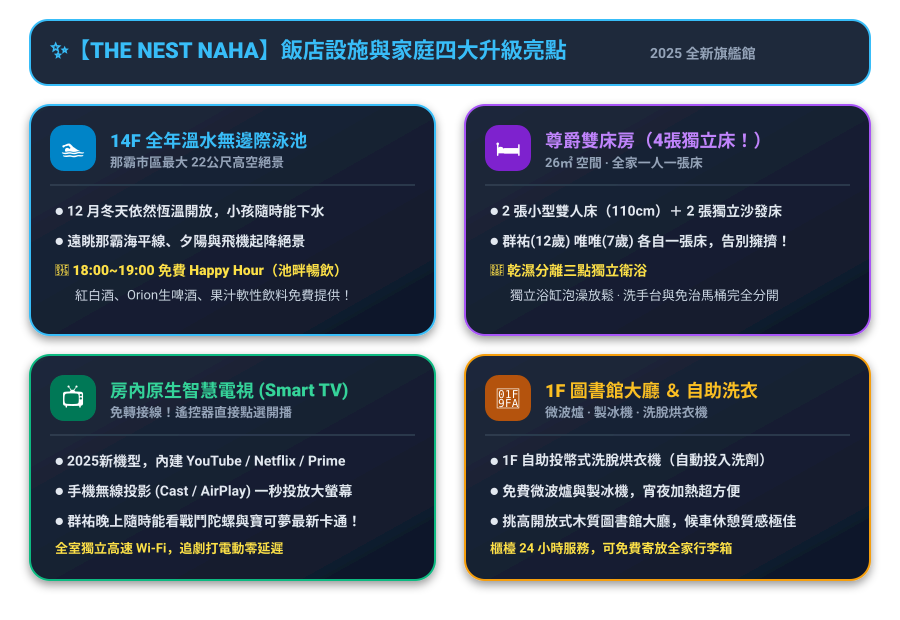
✨ 飯店設施與四大升級亮點圖解
放大看細節
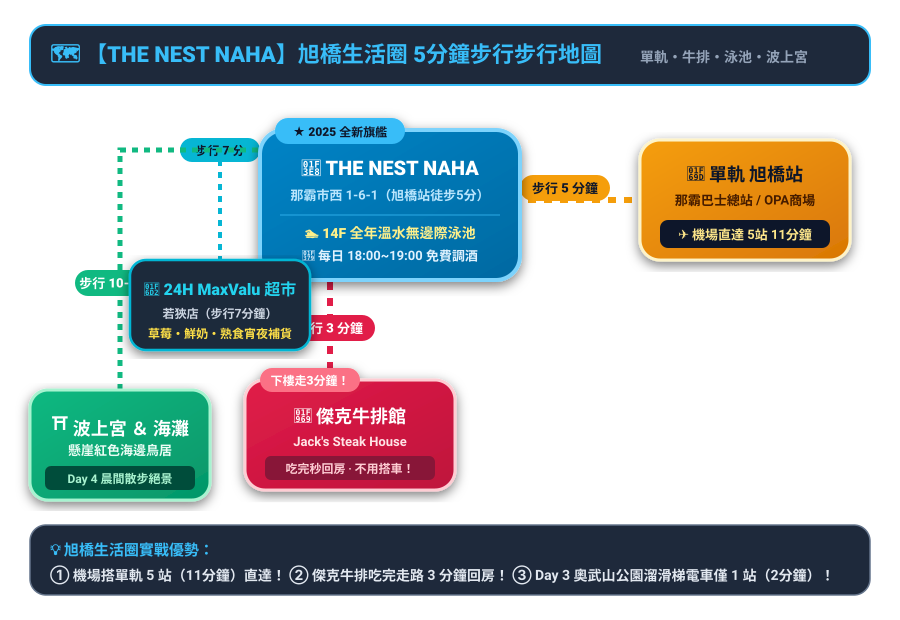
🗺️ 旭橋生活圈 5 分鐘步行地圖
放大看細節
住宿核心指引
📍 第一關：抵達 NEST NAHA 辦理入住 ＆ 尊爵客房 4 人獨立床位分配
實付 33,572 円極致性價比

🏨 THE NEST NAHA 正門迎賓大門實景
🛏️ 尊爵客房一人一床實景
【逐步實戰微動作操作說明書】：
1
【動作 1：步入大廳與出示全家護照】：推開 1F 自動玻璃門，穿過綠意玄關直走至木質接待櫃檯。向服務人員點頭微笑並遞交全家 4 本護照正本，出示手機上的訂房確認畫面（agoda 或官方信件），櫃檯核對身份並確認入住 3 晚。
2
【動作 2：領取房卡與大廳備品自助吧選取】：領取 2 張感應房卡與早餐券後，轉身至大廳右側「備品自助吧（Amenity Bar）」。客房內響應環保僅擺放毛巾與洗沐浴乳，請在此依需要自由拿取兒童專用牙刷牙膏、梳子、刮鬍刀、棉花棒與茶包。
3
【動作 3：電梯感應刷卡與插卡取電】：進入電梯後，必須先拿房卡緊貼面板下方的黑色感應區（聽到嗶聲亮綠燈），才能按下客房樓層按鈕。出電梯抵達房門，房卡輕觸門鎖感應開門，進門後立刻將 1 張卡插入玄關插槽啟動全室冷氣空調與電源。
4
【動作 4：4 張獨立床位安頓與行李開箱】：尊爵客房（26㎡）配備 2 張席夢思名床 ＋ 2 張已預先鋪妥的舒適獨立沙發床，全家一人一張專屬床鋪！將 4 件行李箱攤開於走道與玄關置物架，拿出隨身充電器插上床頭 USB 孔為手機充電。
⚠️【網路實戰避坑密技】：日本飯店退房時間為上午 11:00。磁條房卡切勿與手機 MagSafe 磁吸配件或磁扣錢包貼在一起以免消磁；若不慎消磁，隨時拿至 1F 櫃檯出示護照即可 10 秒免費重設。
【現場溝通必備・中日手指字卡】
出示手機即可
情境
出示給 1F 櫃檯人員辦理入住手續
「チェックインをお願いします。予約名は「LIN SHENG-WEN」、4名です。」
💡 中文含義：麻煩辦理入住手續。訂房登記姓名為『LIN SHENG-WEN』，全家共 4 位。
👨 勝穩爸爸指揮提醒：房卡為感應電梯專用，出門每人可隨身帶一張；房內冷暖空調可獨立手動微調至 24 度，通風安靜無雜音。
唯唯 Mia 最期待亮點
📍 第二關：14F 頂樓溫水無邊際泳池 ＆ Happy Hour 說明書
冬季恆溫加熱開放
【逐步實戰微動作操作說明書】：
1
【動作 1：房內換裝與自備客房大毛巾】：頂樓泳池無另外設置毛巾發放櫃檯！請在房間內先幫唯唯（7歲）和群祐（12歲）換好泳衣泳褲，套上房內深藍色休閒浴袍，從浴室拿取專用大浴巾與防水袋，搭電梯直上 14F。
2
【動作 2：刷卡感應門禁與戶外淋浴淨身】：踏出 14F 電梯推開玻璃門，持房卡輕觸右側黑色感應機開啟泳池防護閘門。下水前，全家先在入口處的戶外淋浴柱踩踏感應開關，沖洗雙腳與身體以維護恆溫水質清潔。
3
【動作 3：恆溫 30°C 戲水與無邊際視野合影】：冬季池水全天候加熱維持在 30°C~32°C 體感溫水！唯唯配戴自備的充氣手臂圈在淺水區踩水，群祐與爸爸在深水區暢游，全家趴在透明玻璃邊緣，俯瞰東海夕陽染紅那霸港灣。
4
【動作 4：池畔吧台 Happy Hour 暢飲領取】：傍晚 17:00~19:00 前往池畔木質酒吧，向調酒師出示房卡，大人可免費兌換 Orion 現生生啤酒與特調雞尾酒，唯唯與群祐領取沖繩香檸果汁與無酒精蘇打，無限續杯享用。
⚠️【網路實戰避坑密技】：泳池全面禁止跳水、嚴禁攜帶玻璃酒瓶或金屬硬物入場。出水時海風較涼，離水瞬間請立即用大浴巾將孩子包覆裹緊，套上厚浴袍再搭電梯回房，確保完全不著涼感冒。
【現場溝通必備・中日手指字卡】
出示手機即可
情境
向 14F 泳池借毛巾 ＆ Sky Lounge 點 Happy Hour 免費飲料
「プール用のバスタオルを4枚お借りできますか？ハッピーアワーのオリオン生ビールとジュースをお願いします。」
💡 中文含義：請問可以借 4 條泳池大浴巾嗎？我們要點 Happy Hour 的 Orion 生啤酒和果汁，謝謝。
⚠️【防呆必備】：泳池需配戴入住時發放的感應手環進入；池畔提供更衣室與毛巾租借，請自備泳衣與泳鏡；游泳完畢請先在 14F 淋浴間稍微擦乾再搭電梯回房，避免著涼感冒。
生活便利設施
📍 第三關：2F 晨光森林景觀餐廳 ＆ 1F 自動洗烘衣機（免買洗衣精）
【逐步實戰微動作操作說明書】：
1
【動作 1：晨間入場出示餐券與領取用餐桌牌】：07:00~10:00 搭梯至 2F 餐廳，入口向服務員出示紙本早餐券。領取綠色「食事中（用餐中）」磁吸小卡，挑選靠大片綠樹景觀窗的大桌放上小卡佔位。
2
【動作 2：九宮格餐盤取餐動線】：戴上取餐手套，取白色九宮格瓷盤。依序夾取主廚現做沖繩苦瓜炒蛋、現煎阿古豬香腸、現切炙燒紅芋、現煮熱騰騰味噌湯，唯唯最愛取小鬆餅淋上沖繩純黑糖蜜，吃得乾淨營養。
3
【動作 3：1F 洗烘衣機投幣操作（免買洗衣精！）】：將換洗衣物裝入洗衣袋帶至 1F 洗衣間。選擇一台螢幕顯示「空き（空閒）」的機器，將衣物投入並旋轉鎖緊圓形艙門。機器具備【自動注入洗劑】功能，完全不用自備或購買洗衣粉！
4
【動作 4：投幣與設定防盜取件密碼】：投入 5 枚 100 円硬幣（標準洗脫烘 120 分鐘為 500 円），面板會請您在數字鍵盤輸入自訂的「4 位數密碼」後按確定。機器開始運轉並鎖死艙門，時間結束後輸入相同密碼即可開門取出香熱乾爽的衣服。
⚠️【網路實戰避坑密技】：洗衣機只吃 100 円硬幣！若手上只有千円紙鈔，洗衣房門口設有「自動兩替機（兌幣機）」，放入千円鈔票立即吐出 10 枚百元硬幣；洗烘完成請於 30 分鐘內取件，避免影響下一位住客。
【現場溝通必備・中日手指字卡】
出示手機即可
情境
2F 早餐入場出示房卡/早餐憑證與詢問座位
「おはようございます。朝食4名です。窓側のテーブル席は空いていますか？」
💡 中文含義：早安！我們有 4 位用餐，請問靠窗的方桌還有空位嗎？
走路 6 分鐘・直行 450 公尺
📍 第四關：西町りうぼう超市（Ryubo Nishimachi）深夜半額掃貨全攻略
營業至午夜 24:00

📸 西町りうぼう超市正門實景

🍣 晚間特價壽司便當專區
【逐步實戰微動作操作說明書】：
1
【動作 1：推車入店與直奔生鮮熱食專區】：從飯店大門右轉沿西町人行道平坦直行 4 分鐘（300m），推門進入 RYUBO 超市。入口處推取一台雙層小推車放上綠色提籃，直奔店內左側最深處的「熟食、炸物、生魚片生鮮冷藏櫃」。
2
【動作 2：鎖定黃金黃色「半額」貼紙】：每晚 20:30~21:00，身穿圍裙的店員會推著標籤機開始貼降價標籤！鎖定貼有黃色橢圓形「半額」（50% OFF 折扣）或「20%~30% 割引き」貼紙的綜合鮪魚鮭魚生魚片、特大炸蝦天婦羅、阿古豬燒肉便當與炭烤雞肉串。
3
【動作 3：狂掃沖繩產地限定乳品與冬季草莓】：轉至中央冷藏島櫃，拿取沖繩當地限定的「明治紅芋鮮奶」、「宮古島酪農牛乳」與 Orion 期間限定水果沙瓦；生鮮水果區挑選一盒鮮紅飽滿的福岡甘王草莓或蜜柑，回房當飯後水果。
4
【動作 4：自助結帳機（セルフレジ）中文一步一步操作】：走至無人自助結帳機台：① 螢幕右上方觸控點選「繁體中文」；② 拿起手持掃描槍，將商品包裝上的黑色條碼對準紅光扣板機，螢幕立即顯示折抵後的「半額金額」；③ 畫面確認無誤按右下角「結帳」；④ 將千円鈔票平整推入紙鈔口或投入硬幣；⑤ 下方取回找零與發票明細；⑥ 將全部戰利品移到後方包裝台裝入自備購物袋。
⚠️【網路實戰避坑密技】：日本超市塑膠袋全面收費（大號 5 円），請隨身攜帶折疊購物袋；超市結帳出口旁設有「免費微波爐」與拋棄式木筷，買好的炸雞排便當可現場微波 50 秒，熱騰騰端回飯店大廳或房間大吃！
【現場溝通必備・中日手指字卡】
出示手機即可
情境
超市收銀台結帳索取購物袋與免洗餐具
「レジ袋を1枚お願いします。お箸とスプーンを4膳いただけますか？クレジットカードで支払います。」
💡 中文含義：請給我一個塑膠購物袋。請問可以附 4 雙免洗筷和湯匙嗎？我們要刷信用卡結帳。
🍽️【NEST NAHA 飯店生活圈・徒步 3~5 分鐘必吃美食口袋清單】
吃貨必看
🥩 傑克牛排館（Jack's Steak House）
必點：特選沙朗牛排（Tenderloin 三分熟）＋ 濃湯紅茶
徒步 3 分鐘 (220m) • 沖繩 70 年傳奇鐵板排隊神店
導航
🍜 龜かめそば（Kame Kame Soba）
必點：軟骨沖繩麵（軟骨ソーキそば）＋ 滿滿艾草
徒步 4 分鐘 (350m) • 在地深厚柴魚豚骨雙湯頭排隊老店
導航
🍰 oHacorte 水果塔 泉崎店
必點：麝香白葡萄水果塔、綜合季節鮮果塔
徒步 8 分鐘 (650m) • 沖繩甜點界人氣第一精緻水果塔
導航
🍛 三笠食堂 辻本店（24H 老牌食堂）
必點：招牌洋蔥炒牛肉丼（牛ちゃんぽん）、山苦瓜定食
徒步 4 分鐘 (300m) • 沖繩昭和家常平價大份量溫暖食堂
導航
走路 3 分鐘・僅 250 公尺
📍 第五關：傑克牛排館（Jack's Steak House）美軍復古牛排全攻略
沖繩 1953 年創始名店
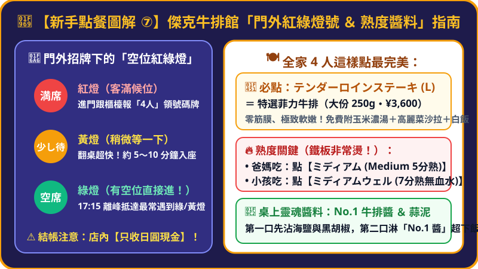
🗺️ 步行 3 分鐘地圖與招牌餐點
【逐步實戰微動作操作說明書】：
1
【動作 1：看招牌紅綠燈與玄關夾板登記】：步行 3 分鐘抵達店門口。先看門口正上方的復古霓虹信號燈（綠燈代表有空位，黃燈代表席滿需稍候）。推開木門進入玄關，在架上的長型白板夾板上寫下【英文姓名（如 LIN）與用餐人數 4】。
2
【動作 2：叫名入座與點餐熟度確認】：店員叫名字時舉手回應，引導入座美式復古紅皮卡座。招牌必點「特選沙朗牛排（Tenderloin Steak）」大份（L，250g）與中份（M，200g）。店員詢問熟度時，強烈建議回答「Medium Rare（三分熟）」，因為鐵板蓄熱極高，端上桌時滋滋作響剛好熟成到完美的軟嫩五分熟！
3
【動作 3：前菜濃湯調味與靈魂沾醬搭配】：先喝隨餐附贈的招牌美軍風白濃湯（切記：桌上黑胡椒罐重重灑上 3~4 下，湯頭瞬間從平淡變為香濃鮮甜！）。牛排上桌後切成厚塊，先吃一口原汁原味，接著淋上沖繩獨有的【No.1 牛排醬】或【A1 牛排醬】，微酸果香完全化解肉脂油膩。
4
【動作 4：拿取桌上壓克力帳單夾至櫃檯結帳】：吃飽後拿起桌上的黑色塑膠號碼夾，走向門口收銀台交給掌櫃結帳。支援現金、各大國際信用卡（VISA/Mastercard/JCB）與感應支付。結帳完畢讓唯唯在門口糖果籃拿顆薄荷糖消口氣。
⚠️【網路實戰避坑密技】：傑克牛排傍晚 18:00~19:30 是排隊高峰，常需等候 45 分鐘以上；最強密技是「下午 17:00 剛開門」或「晚上 20:30 以後」前往，幾乎免排隊直接入座，點大份沙朗肉質最軟嫩、筋膜最少！
【現場溝通必備・中日手指字卡】
出示手機即可
情境
店內玄關登記候位 ＆ 點特選沙朗牛排
「4名です。名前は「LIN」です。特選ロースステーキ（ミディアム）を2つと、ニューヨークステーキを2つお願いします。」
💡 中文含義：我們有 4 位，登記姓名是「LIN」。我們要點特選沙朗牛排（5分熟）2 份、紐約客牛排 2 份，謝謝。
步行 6~7 分鐘
📍 第六關：oHacorté Bakery 泉崎店（2025新址）
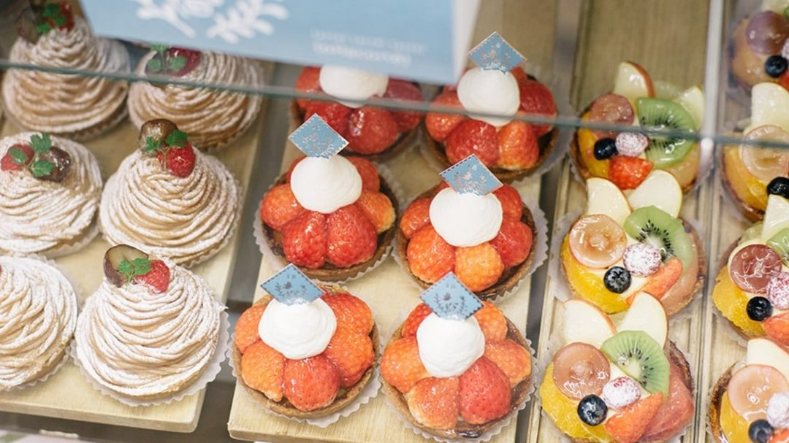
🍓 招牌草莓與季節水果塔實景
【逐步操作說明書】：
1
步行直達新址：出飯店向東走過旭橋天橋至泉崎 1-4-10，步行僅約 6~7 分鐘，溫暖木質店面極易辨識。
2
玻璃冷藏櫃指名選購：手指點選 7cm 酥脆手工招牌水果塔（草莓塔、巨峰葡萄塔、綜合水果塔，每顆約 700~800 円）。
3
外帶附保冷劑：包裝精美並附保冷劑，帶回飯店 14F Sky Lounge 搭配咖啡茶飲享用，唯唯 Mia 與媽媽午後最愛！
【現場溝通必備・中日手指字卡】
出示手機即可
情境
外帶招牌水果塔並索取保冷劑
「持ち帰りでお願いします。イチゴタルトと季節のフルーツタルトをください。保冷剤をつけていただけますか？」
💡 中文含義：我們要外帶。請給我們草莓水果塔與季節水果塔，請問能幫我們附保冷劑嗎？
步行 4 分鐘
📍 第七關：龜かめそば（Kame Kame Soba）排骨麵
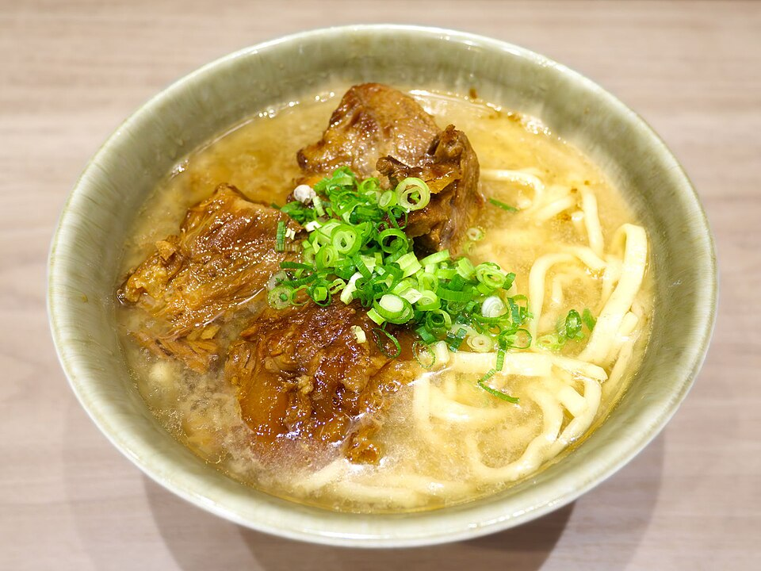
🍜 招牌軟骨排骨麵與野生艾草實景
【逐步操作說明書】：
1
步行 4 分鐘直達：出飯店向西直行至若狹 1-3-11，見古樸日式木造暖簾即達（週六正常營業，週日固定公休）。
2
投幣食券機點餐：投千円鈔按「軟骨ソーキそば（軟骨排骨麵）」，取出食券交給親切的阿嬤店員。
3
大把加入野生艾草：熱騰騰排骨麵上桌，軟骨燉至膠質化開！抓一把桌上免費新鮮艾草浸入熱湯，清香解膩，回味無窮！
【現場溝通必備・中日手指字卡】
出示手機即可
情境
進店交食券給店員阿嬤並安排 4 人同坐
「食券をお願いします。家族4名で一緒に座りたいです。フーチバー（よもぎ）をいただきます。」
💡 中文含義：這是我們的食券，我們全家 4 位希望能坐在一起。桌上的新鮮艾草我們自取享用了，謝謝。
目前章節：🏨 巢飯店設施說明書
2026/12/17 (週四) 第一天
【第一天】小港起飛 ➔ 抵達沖繩 ➔ 單軌直達旭橋 ➔ 西町漫步宵夜 ➔ 暖浴安眠
行程主軸：搭乘台灣虎航航班抵達那霸，單軌電車 11 分鐘直達旭橋站，安頓四張席夢思名床，漫步西町超市與 Lawson 採買限定宵夜甜點，大浴缸泡澡安歇。
15:00 鳳山出發 ➔ 17:30 起飛
📍 第一關：高雄鳳山 ➔ 小港機場 (KHH) 搭虎航 IT728 報到與托運
提前 2 小時抵達
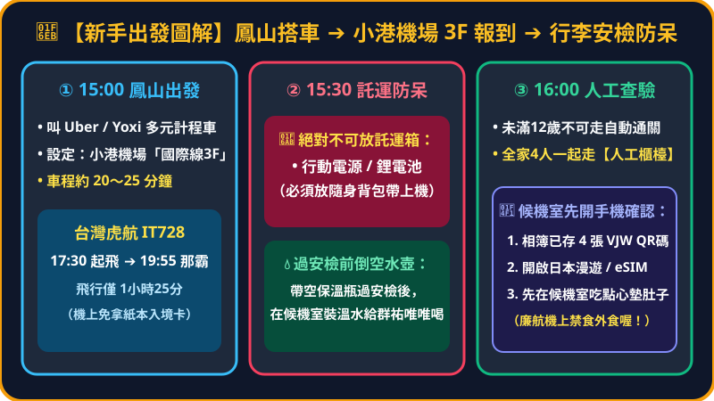
🗺️ 新手出發＆安檢防呆圖解
【逐步實戰微動作操作說明書】：
1
【動作 1：10:30 高雄鳳山出發直送小港機場】：預約大計程車或由家人接送，車程僅約 20~25 分鐘，直達小港機場國際線出境大廳 3F 正門，免去搭乘捷運搬運行李上下月台之苦。
2
【動作 2：虎航櫃檯排隊報到與行李秤重托運】：11:00 抵達台灣虎航報到櫃檯（起飛前 2.5 小時）。全家出示 4 本中華民國護照正本，將 4 件大行李箱逐一放上行李輸送帶秤重托運。領取紙本登機證，並核對登機門號碼與登機時間（13:00）。
3
【動作 3：確認行李通過 X 光機後再離櫃】：依機場民航規定，行李箱托運後必須站在櫃檯旁螢幕前觀看 1 分鐘，確認行李箱順利通過後方 X 光機檢查無違規鋰電池或打火機後，方可離開櫃檯。
4
【動作 4：安檢隨身行李與人臉辨識快速通關】：隨身背包內若有保溫瓶需先倒空水分；行動電源與相機鋰電池一律隨身攜帶、嚴禁托運！筆電取出放塑膠盒通過安檢後，全家使用 e-Gate 自動查驗通關閘門，感應護照並看鏡頭人臉辨識，10 秒快速出境。
⚠️【網路實戰避坑密技】：虎航手提行李每人限 1 件手提＋1 件隨身小包（合計 10kg 以內）；出發前一天請務必上網填寫日本官方「Visit Japan Web (VJW)」完成入境審查與海關申報，截圖儲存「QR Code」在手機相簿，通關速度快三倍！
【現場溝通必備・中日手指字卡】
出示手機即可
情境
鳳山出發計程車司機出示
「高雄国際空港の国際線ターミナル3階出発ロビーまでお願いします。スーツケースが4個あります。」
💡 中文含義：司機大哥您好，請載我們到高雄小港機場國際線航廈 3F 出境大廳，後車廂有 4 件大行李，謝謝！
💡【攻略與小秘訣】：虎航機上無免費餐飲且禁帶外食上機吃，建議過安檢後在候機室先讓兩個小孩吃個麵包或飯糰墊肚子。
💴【費用試算】：鳳山至小港機場計程車資約 NT$ 250～300（折合約 1,400 円）。
19:55 降落那霸 ➔ 20:30 出關
📍 第二關：那霸機場 (OKA) 國際線通關 ＆ 提領行李

📸 那霸機場航廈大廳實景
VJW 電子通關實測：
下機後沿著入境長廊走，出示手機 VJW 入境審查 QR Code。全家依序按指紋與拍照，約 25~35 分鐘即可順利提領 4 件行李出關！
【逐步實戰微動作操作說明書】：
1
【動作 1：下機跟隨指標直奔入國審查大廳】：16:05 飛機降落那霸機場國際線。沿著空橋走入航廈，跟隨「到着（Arrivals）／入國審查」醒目黃色地貼指標前進，牽好唯唯與群祐，不要在走道停留，直奔 2F 入境審查大廳。
2
【動作 2：入境審查窗口出示護照與 VJW QR Code】：排隊抵達審查外國人窗口。大人與小孩分別出示護照與手機上的 VJW 入境審查 QR Code；依機器語音指示，將雙手食指平放在發光的指紋掃描儀上，抬頭直視前方圓形鏡頭拍照，審查官在護照貼上短期逗留貼紙後放行。
3
【動作 3：下樓至行李轉盤提領 4 件行李箱】：搭手扶梯下至 1F 行李大廳，看螢幕顯示「IT728」對應的轉盤號碼。看到自家行李箱滑出時，雙手握住提把平穩拉下轉盤，清點核對 4 件行李數量齊全無誤。
4
【動作 4：電子海關申報閘門刷卡通關出境】：全家推著行李前往「電子海關申報閘門」。將全家代表的手機海關申報 QR Code 對準閘門掃描器，並將代表人的護照晶片朝下掃描，金屬閘門自動彈開，正式踏入沖繩迎賓大廳！
⚠️【網路實戰避坑密技】：那霸機場國際線航廈免費提供「Free Wi-Fi (Okinawa Free Wi-Fi)」，一下飛機即可開啟手機連線；若手機無法連網，出發前已截圖儲存在相簿內的 VJW QR Code 離線照樣可以順暢掃描！
【現場溝通必備・中日手指字卡】
出示手機即可
情境
入境審查或轉盤提領 4 件行李
「家族4名です。Visit Japan WebのQRコードはこちらです。受託手荷物はスーツケース4個です。」
💡 中文含義：我們全家共 4 人，這是我們的 Visit Japan Web 入境審查 QR Code，托運行李有 4 個大箱子。
17:00 抵達 ➔ 17:35 飯店
📍 第三關：那霸機場搭乘單軌電車（Yui Rail）直達「旭橋站」➔ 漫步 10 分鐘抵達 NEST NAHA（大行李防呆全攻略）
單軌 11 分鐘 ＋ 漫步 10 分鐘
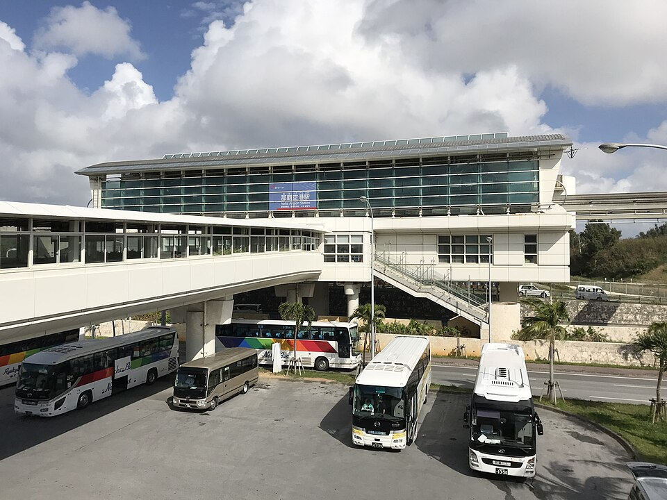
🚝 單軌那霸機場站實景
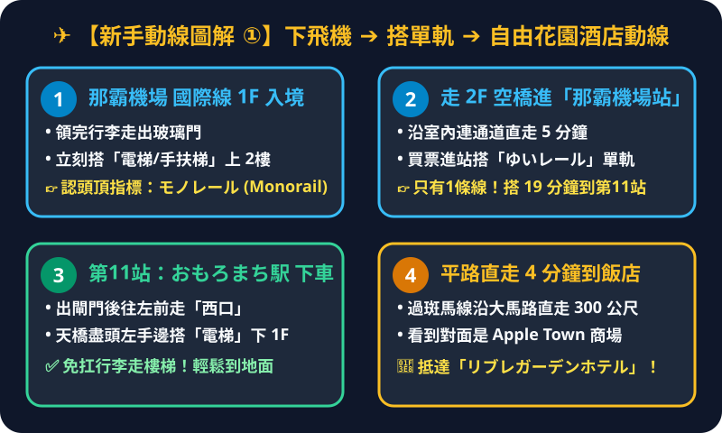
🗺️ 航廈 2F 直通單軌圖解
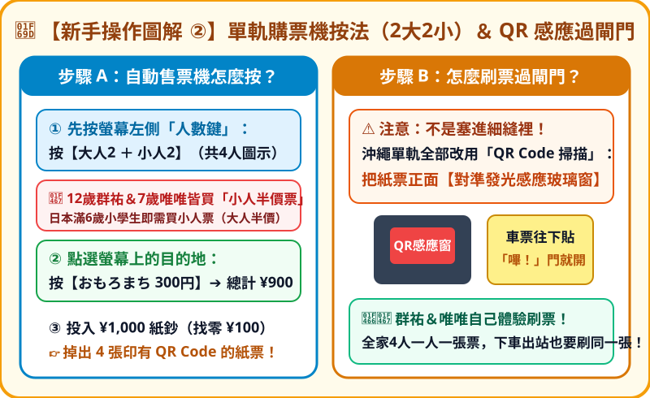
🎫 售票機與 QR 閘門圖解
【逐步實戰微動作操作說明書】：
1
【動作 1：機場 2F 室內連通空橋直通單軌電車站】：提領行李後推著推車搭手扶梯或電梯上 2F，推開標示「單軌電車（ゆいレール）」的玻璃門，沿著全封閉無障礙室內空橋直走 2 分鐘，直達「那霸機場站（那覇空港駅）」剪票大廳，全程免日曬雨淋、推大行李箱極度省力！
2
【動作 2：自動售票機購票（或嗶 Suica / ICOCA 交通卡）】：走向發光的自動售票機：① 螢幕上方點選「繁體中文」；② 點選購票人數（大人 2 位 ＋ 兒童 2 位）；③ 點選目的地「旭橋站（Asahibashi）」（大人 270 円，兒童 140 円，全家合計僅 820 円！）；④ 投入千円鈔票，取回找零與【印有 QR Code 的紙本車票】。（若自備 Suica/ICOCA 交通卡，直接嗶卡進站即可！）
3
【動作 3：QR Code 朝上感應閘門與搭乘單軌電車】：進剪票口時，切勿將紙本車票塞入縫隙！請將車票正面的「黑白 QR Code」朝上，平貼在閘門上方的感應玻璃窗（聽到嗶聲閘門打開）。推著行李搭無障礙電梯上月台，搭乘前往 Tedako 浦西方向的單軌電車。
4
【動作 4：第 5 站「旭橋站」下車，西口電梯平坦推行李 10 分鐘直達飯店】：列車行駛 11 分鐘抵達「旭橋站」。下車後搭電梯至 1F，由「西口」出站。沿著西町平坦寬敞的人行道（無階梯、無斜坡、路面極平整）推著行李箱直行約 850 公尺（約 10~11 分鐘），直接抵達 THE NEST NAHA 飯店大廳！
⚠️【網路實戰避坑密技】：**絕對不要嘗試一家 4 人＋4 個大行李箱硬塞 1 台普通計程車！**日本一般轎車型與 JPN TAXI 計程車後車廂最多只能平放 2 個 28 吋大箱，司機看到 4 個大箱絕對拒載；改搭單軌電車完全零塞車風險、車資省下將近 1,000 円，且旭橋站全程有無障礙電梯，推大箱最省心！
【現場溝通必備・中日手指字卡】
出示手機即可
情境
單軌電車站詢問旭橋站車票與電梯位置
「すみません、旭橋駅までの切符を買いたいです。大人2枚と子供2枚です。エレベーターはどちらですか？」
💡 中文含義：不好意思，我想買到旭橋站的單軌車票，2 張大人和 2 張小孩。請問無障礙電梯在哪個方向？
🍽️【NEST NAHA 飯店生活圈・徒步 3~5 分鐘必吃美食口袋清單】
吃貨必看
🥩 傑克牛排館（Jack's Steak House）
必點：特選沙朗牛排（Tenderloin 三分熟）＋ 濃湯紅茶
徒步 3 分鐘 (220m) • 沖繩 70 年傳奇鐵板排隊神店
導航
🍜 龜かめそば（Kame Kame Soba）
必點：軟骨沖繩麵（軟骨ソーキそば）＋ 滿滿艾草
徒步 4 分鐘 (350m) • 在地深厚柴魚豚骨雙湯頭排隊老店
導航
🍰 oHacorte 水果塔 泉崎店
必點：麝香白葡萄水果塔、綜合季節鮮果塔
徒步 8 分鐘 (650m) • 沖繩甜點界人氣第一精緻水果塔
導航
🍛 三笠食堂 辻本店（24H 老牌食堂）
必點：招牌洋蔥炒牛肉丼（牛ちゃんぽん）、山苦瓜定食
徒步 4 分鐘 (300m) • 沖繩昭和家常平價大份量溫暖食堂
導航
21:10 入住 ➔ 21:50 散步
📍 第四關：NEST NAHA 入住安頓 ➔ 西町超市採買首晚半額宵夜
📸 西町りうぼう超市正門實景
🍣 晚間特價壽司便當專區
【逐步實戰微動作操作說明書】：
1
【動作 1：抵達飯店大門司機卸行李】：計程車直接開上飯店 1F 門廊迴車道。司機會下車開啟後車廂協助卸下行李，付清車資領取發票後，全家推著行李進入溫暖大廳辦理 Check-in。
2
【動作 2：進房換裝脫鞋與檢查設備】：搭電梯進房，玄關處脫下鞋子換上室內拖鞋。大人洗把臉放鬆，幫唯唯換下厚外套穿上舒適輕便便服；將隨身包包貴重物品鎖入房內保險箱，手機接上電源充電。
3
【動作 3：20:30 步行 4 分鐘直奔西町超市】：兩手空空走出飯店，夜晚西町街區照明良好且安靜安全。步行 300 公尺進入 RYUBO 超市，剛好遇上生鮮熱食「半額貼紙」壓軸出清時段！
4
【動作 4：挑選半額炸物生魚片與回房開吃】：選購貼有半額標籤的烤肉串、炸雞塊、生魚片大盤與沖繩泡盛生啤酒，孩子們挑選布丁與紅芋鮮奶。結帳後散步回飯店，在房內舒適沙發區開動第一晚豐盛又省錢的沖繩宵夜！
⚠️【網路實戰避坑密技】：西町街區過馬路請走斑馬線並按行人穿越鈕，日本車輛遇行人絕對禮讓停車；回房後可先燒一壺開水倒入保溫瓶，並在空調面板調整適宜室溫（建議 24°C 微風），確保首晚熟睡無噪音。
【現場溝通必備・中日手指字卡】
出示手機即可
情境
西町超市半額壽司宵夜結帳
「クレジットカードで支払えますか？レジ袋を1枚お願いします。お箸を4膳いただけますか？」
💡 中文含義：請問可以刷信用卡嗎？請給我一個塑膠袋和 4 雙免洗筷，謝謝。
21:50 街區漫步 ➔ 22:45 暖浴入眠
📍 第五關：西町夜間生活圈漫步 ➔ Lawson 限定甜點挖掘 ➔ 客房宵夜派對與暖心泡澡安歇
西町夜巡 ＆ 深度放鬆
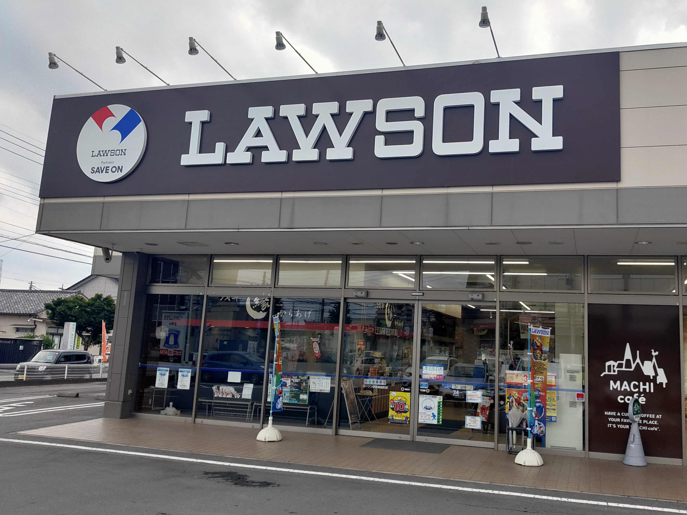
🏪 Lawson 超商限定挖寶
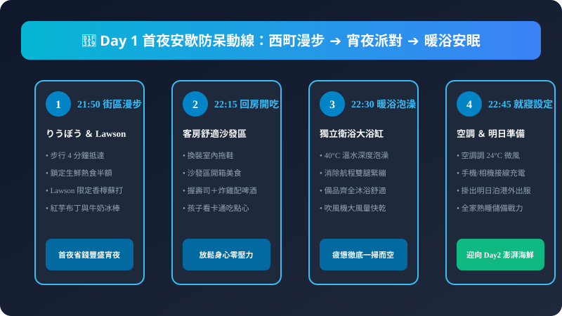
🗺️ 首夜就寢動線圖解
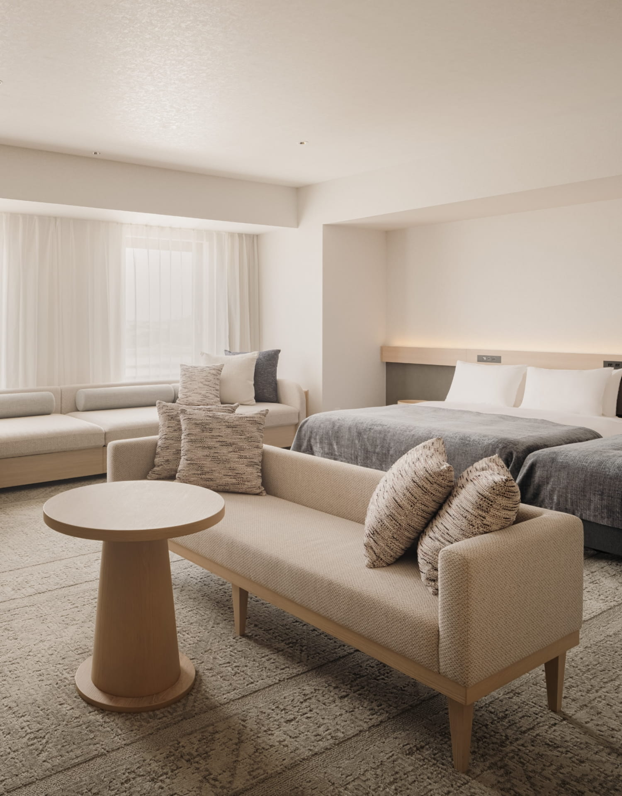
🛏️ 四床家庭房夜間實景
【逐步實戰微動作操作說明書】：
1
【動作 1：逛完超市漫步至 Lawson 採買限定甜點】：從りうぼう超市走出來，步行 1 分鐘順路造訪附近的「Lawson 那霸西二丁目店」。帶孩子挑選沖繩限定的「香檸氣泡蘇打」、濃厚「黑糖手工布丁」與「沖繩鮮奶雪糕」，大人可多備一罐 Orion 啤酒與無糖綠茶。
2
【動作 2：回房展開首夜宵夜派對】：22:15 兩手滿載戰利品回到飯店，搭電梯回房。玄關脫鞋換上室內拖鞋，洗淨雙手。一家四口圍坐在寬敞的沙發茶几區，開箱半額厚切鮭魚握壽司、熱烤雞串與沁涼飲料，全家邊吃邊看日本電視綜藝，徹底洗滌飛行旅途疲累！
3
【動作 3：獨立衛浴大浴缸放熱水舒壓泡澡】：22:30 進入乾濕分離大浴室，浴缸注入約 40°C 溫熱水。讓群祐與唯唯先泡澡玩水放電，隨後大人浸泡熱水 10 分鐘，促進足部血液循環，徹底緩解小腿緊繃。房內提供大風量負離子吹風機，小朋友頭髮快速吹乾不著涼。
4
【動作 4：設定空調 24°C 微風、排定明日衣物安眠】：床頭面板調整大金空調為「暖房/送風 24°C 微風」，避開直吹頭部；全家手機、相機、行動電源接上 USB 充電線；玄關衣架掛好明天前往「泊港魚市場 ＆ PARCO CITY」的防風外套與便服。四張席夢思名床各自躺平，22:45 全家甜蜜熟睡！
⚠️【網路實戰避坑密技】：沖繩 12 月夜間室外約 17~19°C 略有海風，夜間散步務必穿上薄外套防風；日本飯店自來水雖可生飲，但沖繩石灰質含量較高，建議以房內快煮壺煮沸飲用，或直接飲用超市購買的日本天然礦泉水。
【現場溝通必備・中日手指字卡】
出示手機即可
情境
Lawson 超商結帳時請店員加熱便當並索取湯匙吸管
「すみません、お弁当を温めていただけますか？スプーンとストローもお願いします。」
💡 中文含義：不好意思，請問可以幫我微波加熱便當嗎？另外請給我湯匙和吸管，謝謝。
2026/12/18 (週五) 第二天
【第二天】順遊雙饗！泊港海鮮早午餐 ➔ PARCO CITY 親子海景狂歡 ➔ 傑克牛排 ➔ 辻町海風夜行洗衣泡澡
行程主軸：早晨泊港大啖黑鮪魚烤龍蝦 ➔ PARCO CITY 親子旗艦與海景 ➔ 傍晚傑克牛排大口吃肉 ➔ 飯後波之上海風夜巡散步 ➔ 2F 投幣洗衣與深度泡澡充飽電。
🎬 泊港魚市場 ＆ PARCO CITY 現場實拍導覽影片（點擊直接搜尋 YouTube 開箱）
08:30 起床 ➔ 09:30 叫車 ➔ 09:40 抵達
📍 第一關：NEST NAHA 直達「泊港魚市場（泊いゆまち）」（四大王牌名攤直擊全攻略）
計程車 7 分鐘直達
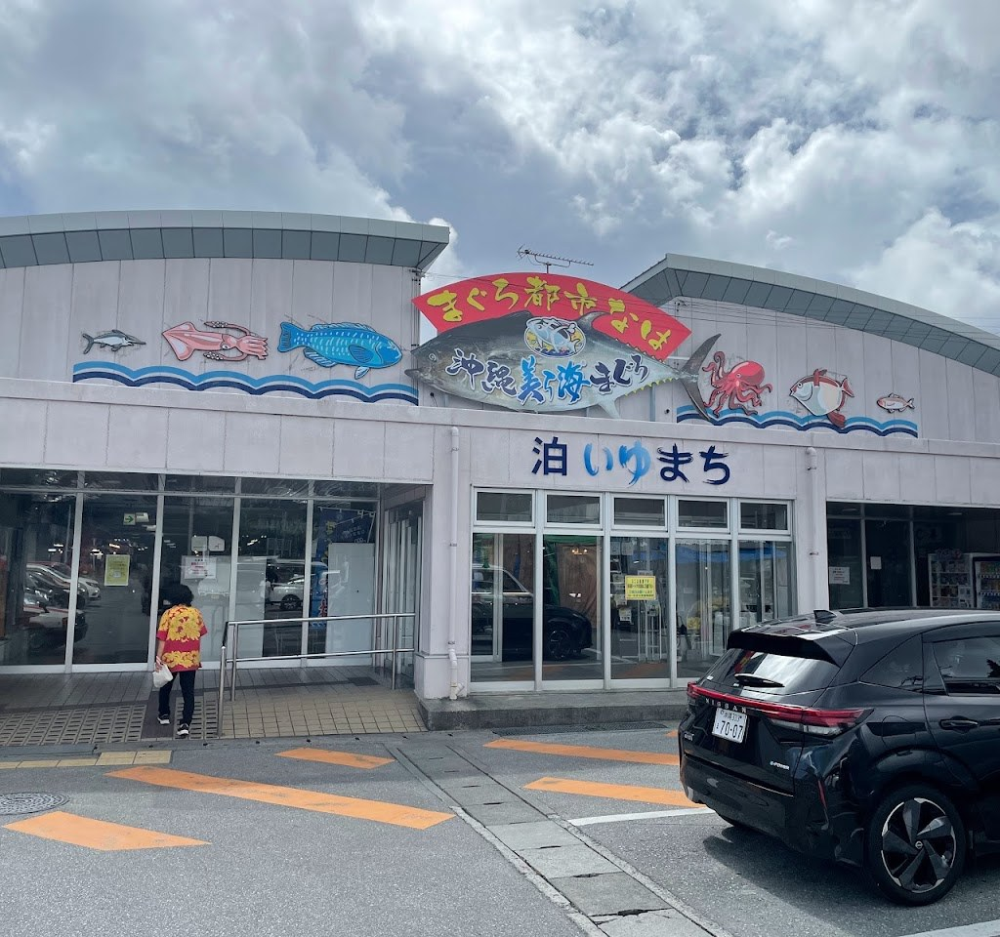
📸 泊港魚市場正門實景
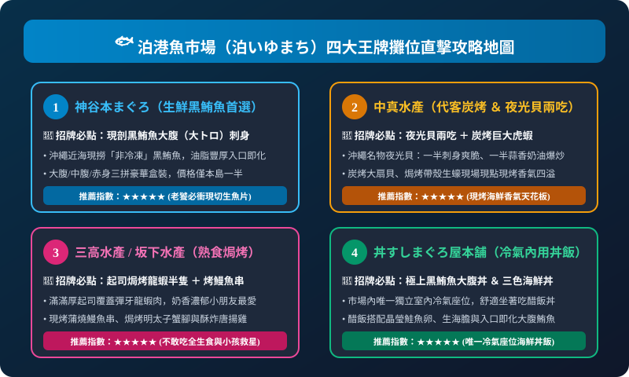
🗺️ 四大王牌攤位直擊地圖
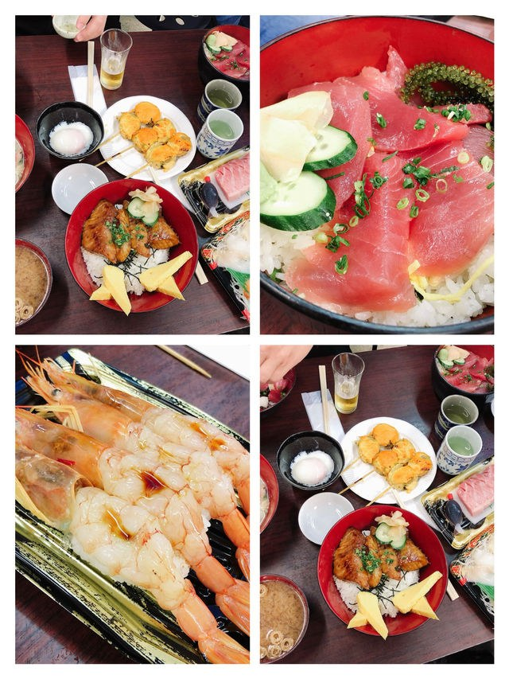
🍢 現烤扇貝大蝦明太子龍蝦
【泊港魚市場・老饕欽定四大王牌攤位直擊指南】
實戰嚴選
1
神谷本まぐろ（神谷生魚片）
生鮮黑鮪魚首選
👑 必吃招牌：現剖黑鮪魚大腹（大トロ Otoro）與三拼刺身。
💡 推薦理由：沖繩是全日本少數產「非冷凍」生鮮黑鮪魚的聖地，當日清晨現撈，油脂均勻入口即化，一大盒裝滿只要 1,200~1,500 円，價格僅日本本島一半！
2
中真水產（Nakazami Suisan）
代客炭烤名店
👑 必吃招牌：沖繩名物夜光貝兩吃、炭烤大虎蝦、焗烤生蠔大扇貝。
💡 推薦理由：提供現場炭烤熱食！特產「夜光貝兩吃」一半做爽脆清甜刺身、一半做蒜香奶油爆炒；帶殼大生蠔與扇貝炭火現烤，香氣撲鼻。
3
三高水產 / 坂下水產
熟食焗烤小孩最愛
👑 必吃招牌：起司焗烤龍蝦半隻、蒲燒鰻魚串、酥炸唐揚雞。
💡 推薦理由：全熟食專門攤位！厚厚起司覆蓋扎實彈牙的龍蝦肉，香濃爆汁牽絲；鰻魚串烤得油亮香甜，不敢吃生食或帶小朋友必點。
4
丼すしまぐろ屋本舗
唯一獨立冷氣雅座
👑 必吃招牌：極上黑鮪魚大腹丼、鮭魚卵海膽三色丼。
💡 推薦理由：市場內唯一擁有專屬室內冷氣內用區的店鋪！醋飯搭配滿滿現切鮪魚與海膽，想舒適坐著配熱湯或醋飯享用就選這裡。
【逐步實戰微動作操作說明書】：
1
【動作 1：飯店大門叫車直達市場正門】：09:30 整理好隨身包走出 NEST NAHA 大門，門口搭計程車出示「泊いゆまち」字卡，7 分鐘平穩直達市場門口（車資約 850 円）。市場內部環境乾淨通風、完全無腥味且地面乾燥。
2
【動作 2：神谷生魚片直購非冷凍黑鮪魚大腹】：進門左手邊找到「神谷本まぐろ」，挑選清晨漁船剛解體的【黑鮪魚大腹刺身】與【三拼刺身】，粉紅大理石油花入口即化；攤位會附贈小包芥末與醬油。
3
【動作 3：中真水產點夜光貝兩吃 ＋ 三高水產買焗烤龍蝦】：走向中真水產挑選一顆新鮮夜光貝，請師傅做「生切爽脆刺身 ＋ 蒜香奶油熱炒」兩吃，加點炭烤大虎蝦與焗烤大扇貝；隨後到三高水產選購金黃牽絲的「起司焗烤龍蝦半隻」，唯唯與群祐搶著吃！
4
【動作 4：立食桌或鮪魚屋本舖入座開動】：端著豐盛的生熟海鮮全餐移步至中央立食長桌（或進入まぐろ屋本舗冷氣內用區），大口享用黑鮪魚、彈牙龍蝦與現烤扇貝。桌旁備有洗手台與衛生紙，吃完後將垃圾依規定分類丟入垃圾桶。
⚠️【網路實戰避坑密技】：泊港各海鮮攤位多數僅收「日圓現金」，請備妥千円紙鈔；早晨 09:30~10:45 是魚貨最齊全、人潮最少的黃金時段，超過中午 12:30 黑鮪魚大腹與海膽龍蝦經常全數搶購一空！
【現場溝通必備・中日手指字卡】
出示手機即可
情境
點選黑鮪魚大腹、夜光貝兩吃（刺身＋奶油炒）與起司焗烤龍蝦
「大トロ刺身、夜光貝の刺身とバター焼き、伊勢エビのチーズ焼きをください。ここで食べます。」
💡 中文含義：請給我黑鮪魚大腹刺身、夜光貝（生切刺身與奶油炒兩吃）、以及起司焗烤龍蝦，我們在現場吃，謝謝。
10:45 叫車 ➔ 11:00 抵達（順路直達完全不塞車）
📍 第二關：泊港魚市場直送「浦添 PARCO CITY」（計程車直送操作說明書）
順向車程僅 8~10 分鐘
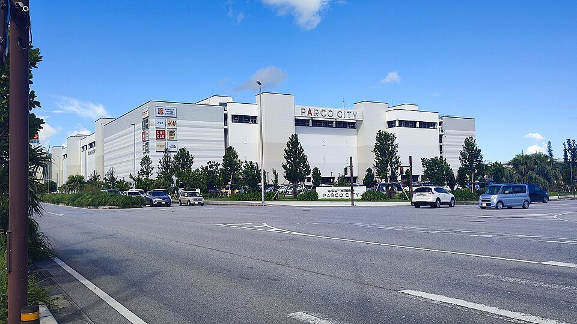
📸 PARCO CITY 臨海商場實景
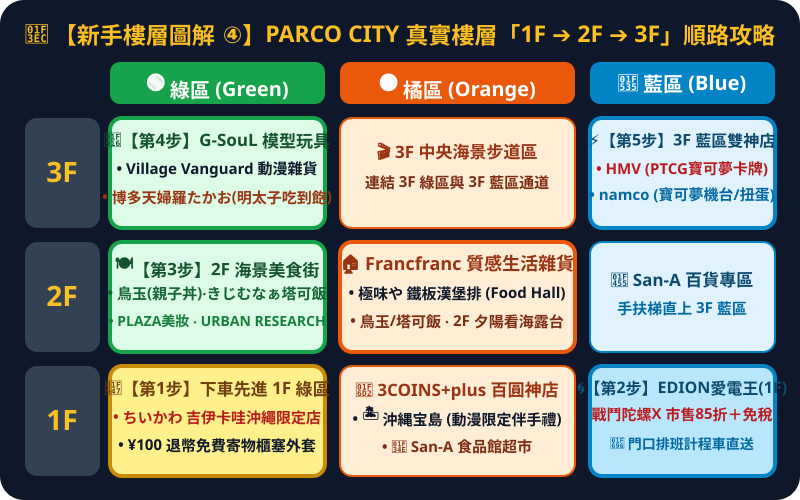
🗺️ 商場分區攻略圖解
【逐步實戰微動作操作說明書】：
1
【動作 1：走出泊港大門直通計程車排班處】：10:45 吃飽洗淨雙手走出魚市場大門，正前方停車場即有排班計程車等候。若無空車，司機通常 2~3 分鐘內便會進場載客。
2
【動作 2：出示「浦添パルコシティ」字卡並確認走西海岸道路】：上車後出示手機字卡「浦添パルコシティ（西海岸道路経由）」。司機點頭出發，直接駛上寬敞平整的沖繩西海岸臨港高速幹道一路向北，完全順向無紅綠燈阻滯，車程僅需 8~10 分鐘（車資約 1,300~1,500 円）！
3
【動作 3：抵達商場 1F 綠區（Green Zone）計程車專用下車道】：PARCO CITY 長達 500 公尺！計程車會直接平穩停靠在 1F 綠區入口迎賓大廳旁，付費下車後，推門就是明亮冷氣商場，完全不怕吹風淋雨。
4
【動作 4：搭乘中央手扶梯直上 3F 綠區動漫娛樂區】：穿過 1F 挑高中庭，抬頭認明「Green Zone（綠區）」標示，搭乘手扶梯直上 3 樓，出扶梯口正對面就是群祐朝思暮想的玩具反斗城與 namco 電玩動漫王國！
⚠️【網路實戰避坑密技】：下車時請記住 1F 計程車站牌位置（標示為「タクシー乗り場」），傍晚採買完畢回程也是在同一個乘車處排隊上車，司機會依序前進載客，動線完全不迷路。
【現場溝通必備・中日手指字卡】
出示手機即可
情境
從泊港魚市場搭計程車直送 PARCO CITY
「運転手さん、浦添のパルコシティ（サンエー浦添西海岸 PARCO CITY）までお願いします。西海岸道路で行ってください。」
💡 中文含義：司機先生，請載我們到浦添 PARCO CITY，請走西海岸臨港道路，謝謝。
11:00 - 13:30 娛樂動漫王國
📍 第三關：3F 娛樂動漫王國・群祐戰鬥陀螺 X ＆ 唯唯三麗鷗吉卜力專賣店
3F 綠區
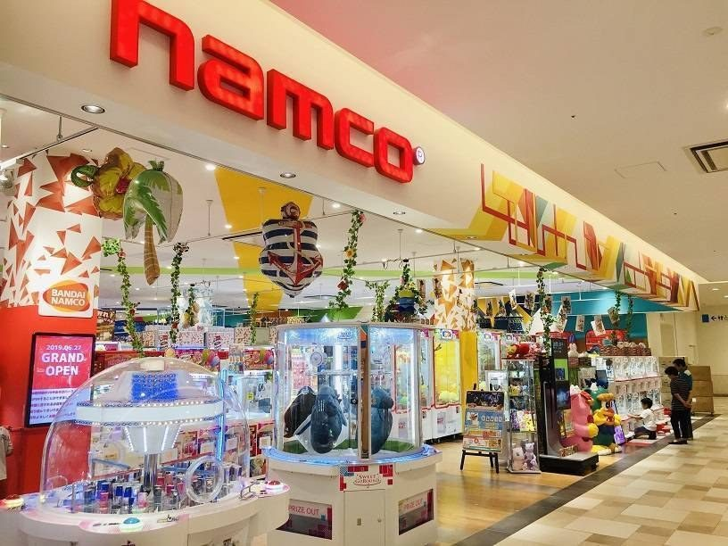
🎮 3F namco 動漫遊戲王國
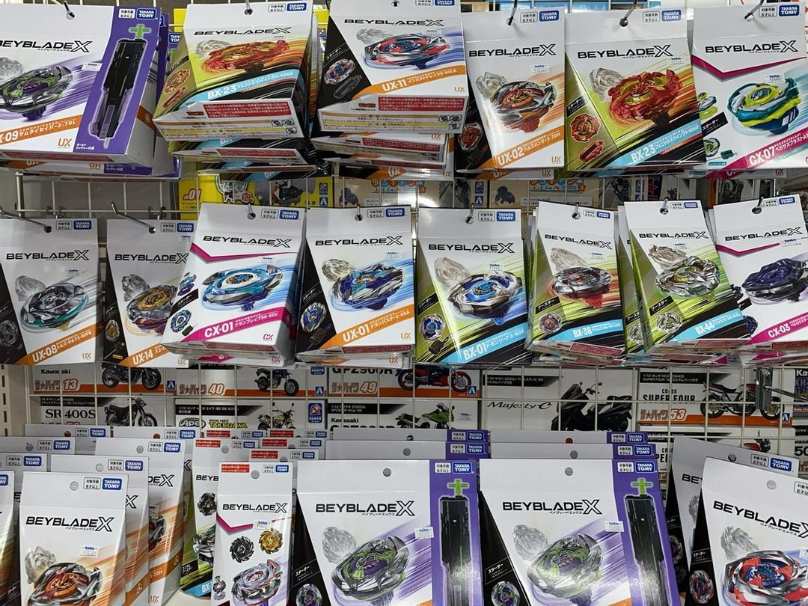
🔥 戰鬥陀螺 X 旗艦貨架
【逐步實戰微動作操作說明書】：
1
【動作 1：【👦 群祐戰場】直奔 Toys"R"Us 戰鬥陀螺 X 貨架】：直奔玩具反斗城與 namco 門口，整面展示牆陳列最新「戰鬥陀螺 X（Beyblade X）」！拿取日版限定新型發射器、限定輪盤軸心與便攜對戰盤，日本定價約台灣專櫃 65 折；店內設有免費陀螺對戰盤機台，可讓孩子現場與日本小朋友試玩切磋！
2
【動作 2：【👧 唯唯夢幻島】進入三麗鷗與吉卜力橡子共和國】：同層 3F 步行 30 秒抵達 **Sanrio 三麗鷗專賣店 ＆ 橡子共和國**。唯唯挑選 Hello Kitty 與酷洛米限定毛絨娃娃、盲盒文具；橡子共和國門口設有巨大等身立體龍貓巴士與巨大樹洞龍貓，爸爸拿出手機幫唯唯拍下可愛合照！
3
【動作 3：體驗 namco 最新寶可夢機台與抓娃娃機】：群祐若想體驗寶可夢機台（Mezastar/PokéPeace），機器投幣 100 円即可投入戰鬥，並會掉出實體黑色卡匣；夾娃娃機區域若夾子卡住，可向巡場穿制服店員招手說「Sumimasen」，店員常會親切幫忙調整擺位！
4
【動作 4：玩具反斗城櫃檯結帳出示護照免稅】：採買玩具滿 5,500 円（含稅），結帳時主動向收銀員出示中華民國護照正本，店員會直接掃描護照條碼，現場以「免稅未稅價」結帳扣除 10% 消費稅！
⚠️【網路實戰避坑密技】：日本購買戰鬥陀螺 X 外盒包裝印有「Beyblade X App 點數 QR Code」，該 QR Code 僅支援日本地區 App 帳號掃描集點，外盒請完整保留帶回台灣開箱留念！
【現場溝通必備・中日手指字卡】
出示手機即可
情境
尋找戰鬥陀螺 X 專區 ＆ 詢問退稅
「すみません、ベイブレードX（BEYBLADE X）の売り場はどこですか？免税（Tax-Free）手続きはできますか？」
💡 中文含義：不好意思，請問戰鬥陀螺 X 的專櫃在哪裡？另外店內可以辦理退稅嗎？
🍽️【浦添 PARCO CITY 館內・老饕必吃美食口袋清單】
館內嚴選
🥩 極味屋（極味や 2F 美食街）
必點：伊萬里黑毛和牛漢堡排（鐵板小圓石自煎）
2F 美食廣場 • 福岡超排隊名店，牛肉鮮甜肉汁噴發
導航
🍳 琉球卵料理 鳥玉（Toritama 2F）
必點：黃金特濃蛋包飯 ＋ 塔塔醬多汁唐揚炸雞
2F 美食廣場 • 沖繩在地新鮮朝採土雞蛋專門店
導航
🍔 A&W 浦添店（美式經典漢堡 2F）
必點：The A&W 莫札瑞拉起司厚牛堡 ＋ 麥根沙士
2F 美食廣場 • 全日本僅沖繩獨有的美式老牌漢堡
導航
🍦 Blue Seal 冰淇淋（2F 海景旗艦店）
必點：沖繩香檸雪酪、鹽金楚糕、紅芋雙球
2F 濱海區 • 邊看西海岸蔚藍海景邊吃沁涼冰淇淋
導航
13:30 - 14:30 聖誕樹拍照 ＆ 美食雙保險
📍 第四關：2F 挑高中庭巨型聖誕樹全家福 ＆ 美食廣場彈性雙保險 / 海景下午茶
2F 中庭 ＆ 露台
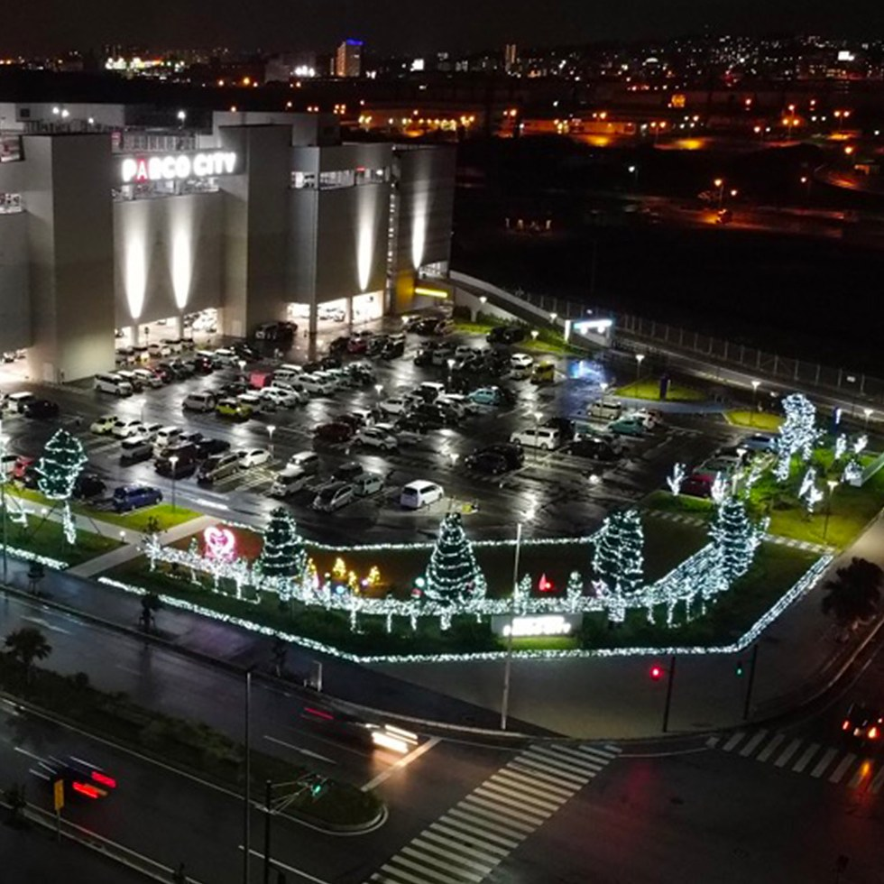
🎄 2F 巨型室內聖誕樹
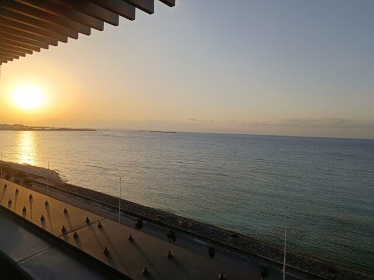
🌊 戶外海景露台冰淇淋
【逐步實戰微動作操作說明書】：
1
【動作 1：搭手扶梯下 2F 中庭聖誕樹合影】：13:30 搭乘手扶梯下至 2F 挑高中庭（Center Plaza）。現場矗立高達數米的華麗「巨型室內聖誕樹」與金色燈海垂飾，中庭正前方有最佳攝影地標，全家在此留下溫馨唯美的聖誕合照！
2
【動作 2：推開玻璃門至 2F 觀海露台品嚐 Blue Seal 冰淇淋】：中庭旁推開玻璃門直通戶外木棧道「觀海露台（Seaside Deck）」。至 Blue Seal 專櫃點一份雙球冰淇淋（必選沖繩紅芋與雪鹽焦糖金楚糕），坐在面海長椅上品嚐，微風吹拂眺望碧藍東海，身心徹底放鬆！
3
【動作 3：【美食雙保險】肚子餓隨時至美食廣場點餐】：早上在泊港吃得很飽，若群祐或唯唯中途想吃熱食，2F 美食廣場備有【極味屋黑毛和牛漢堡排】與【琉球卵料理 鳥玉親子丼】。至櫃檯點餐領取「取餐震動呼叫鈴」，回觀海座位等候，震動響起時前往取餐，彈性自在完全不設限！
⚠️【網路實戰避坑密技】：2F 戶外觀海露台在下午 16:00~17:30 會迎來絕美的落日晚霞染紅海面，是全沖繩拍逆光家庭剪影的最美機位；露台風大時請幫孩子套上薄防風外套。
【現場溝通必備・中日手指字卡】
出示手機即可
情境
點 Blue Seal 冰淇淋 ＆ 極味屋漢堡排
「ブルーシールのダブルアイス（紅イモと塩ちんすこう）をお願いします。極味やハンバーグセットを1つお願いします。」
💡 中文含義：我們要一份 Blue Seal 雙球冰淇淋（紅芋與雪鹽金楚糕口味），以及一份極味屋漢堡排套餐，謝謝。
14:30 - 17:30 購物 ➔ 18:30 晚餐
📍 第五關：全家免稅服飾生活血拚 ➔ 搭車回飯店放戰利品 ➔ 傑克牛排館大口吃肉
1F/2F 旗艦店 ＆ 傑克牛排
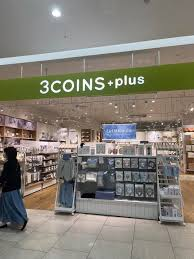
🛍️ 3COINS 生活雜貨
【逐步實戰微動作操作說明書】：
1
【動作 1：攻佔全沖繩最大 Uniqlo、GU、3COINS 旗艦店】：14:30~17:30 展開免稅服飾生活採購！Uniqlo 與 GU 旗艦店男女裝、發熱衣與兒童冬裝尺碼最齊全；3COINS+plus 採買精緻日系收納與百元文具。各店消費滿 5,500 円，於收銀台結帳時出示護照立即退稅 10%！
2
【動作 2：前往 1F 計程車站搭車直達 NEST NAHA】：17:30 提著滿滿購物袋搭電梯下至 1F 綠區計程車站，依序排隊上車。出示手機字卡「辻のジャッキーステーキハウス又はネストホテル那覇」。司機下車協助將所有大購物袋放入後車廂，車程約 18 分鐘直達飯店門口放戰利品。
3
【動作 3：戰利品放房間，18:30 散步 3 分鐘至傑克牛排館】：回房將戰利品大包小包卸在玄關，全家洗把臉兩手空空走出飯店，漫步 200 公尺至傑克牛排館。在玄關白板寫下英文名字「LIN」，點兩客大份特選沙朗牛排（三分熟）大口吃肉、大啖白濃湯與冰紅茶，歡樂慶祝第二天圓滿成功！
⚠️【網路實戰避坑密技】：PARCO CITY 部份專櫃（如無印良品或特定雜貨）退稅方式不同，若專櫃無法現場退稅，請保留該店發票與未拆封商品，至 2F 橘區（Orange Zone）的「免稅手續統一櫃檯（Tax-Free Counter）」憑護照與發票一次退回現金！
【現場溝通必備・中日手指字卡】
出示手機即可
情境
從 PARCO CITY 搭計程車直達傑克牛排
「運転手さん、辻のジャッキーステーキハウス（那覇市辻1-7-3）までお願いします。トランクに買い物袋を入れます。」
💡 中文含義：司機先生，請載我們到辻的傑克牛排館（那霸市辻1-7-3），後車廂需要放大包戰利品，謝謝。
19:45 辻町海風散步 ➔ 22:30 投幣洗衣與深浸泡澡
📍 第六關：辻町與波之上夜間海風漫步 ➔ 波之上深夜超商挖寶 ➔ NEST 2F 投幣洗衣與深浸泡澡充能
海風散策 ＆ 全衣烘乾
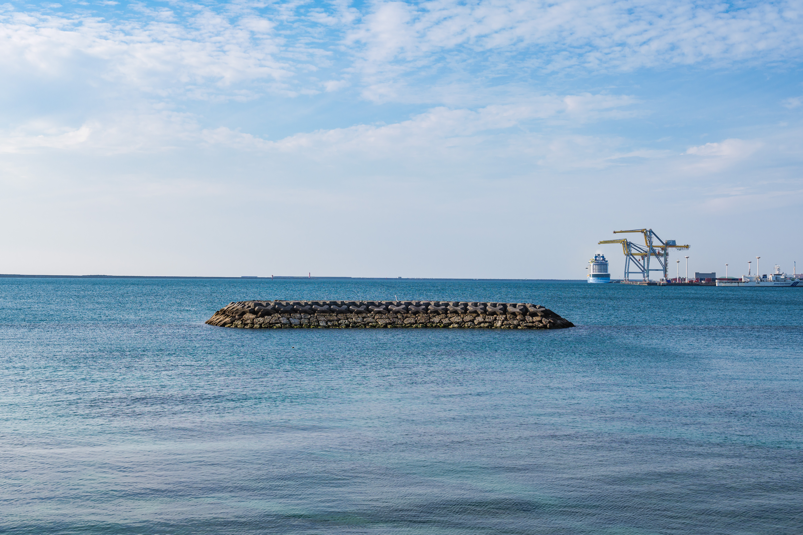
🌊 波之上海風夜巡漫步
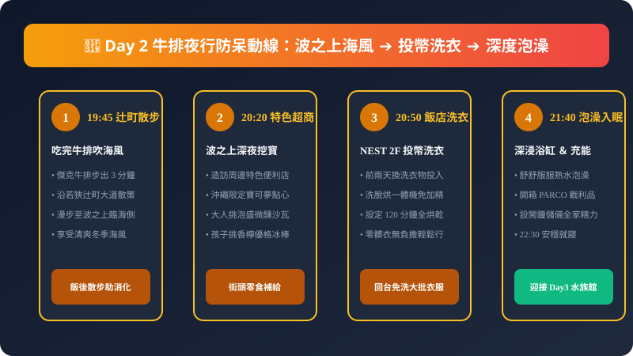
🗺️ 牛排夜行防呆動線圖解
【逐步實戰微動作操作說明書】：
1
【動作 1：傑克牛排飽足後沿辻町漫步助消化】：19:45 吃完熱騰騰的特選沙朗牛排，全家步出牛排館。不急著搭車，沿著辻町寬敞乾淨的行人道朝波之上方向悠閒漫步約 15 分鐘，感受沖繩冬季夜晚特有的清新海風，大口深呼吸，輕鬆消除晚餐飽脹感。
2
【動作 2：波之上深夜特色超商挖寶新奇甜點】：散步至波之上週邊特色超商，挑選日本最新上市的「沖繩香檸乳酪雪糕」、「寶可夢聯名果汁軟糖」與「泡盛微醺特調沙瓦」。孩子們挑選喜愛的零食，全家歡笑沿著西町林蔭大道步行返回飯店。
3
【動作 3：20:50 飯店 2F 啟動投幣洗脫烘一體機】：回到飯店，將全家前兩天換下的衣服裝入洗衣袋，拿到 2F 投幣洗衣房。選用日本 SHARP 洗脫烘一體機（投入 500~600 円百元硬幣），系統會自動注入濃縮洗衣精與柔軟精，設定 120 分鐘標準洗烘，睡醒直接擁有蓬鬆乾爽的衣物，免曬免收！
4
【動作 4：深浸浴缸泡澡放鬆 ＋ 梳理 PARCO CITY 戰利品】：回房放熱水享受深度泡澡，徹底放鬆今天在 PARCO CITY 走了一萬五千步的雙腿。在客房沙發區開箱清點今天購買的 Uniqlo 發熱衣、戰鬥陀螺與三麗鷗紀念品。設定 22:30 就寢鬧鐘，為明日 Day 3「波上宮 ＆ 國際通」儲備 100% 精神！
⚠️【網路實戰避坑密技】：2F 投幣洗衣機只接受「100 円日幣硬幣」，若手邊只有千円紙鈔，可至 1F 櫃檯向服務人員出示字卡兌換零錢；洗脫烘運轉時請記住機台號碼，洗衣完成後房卡感應即可取出，完全不用在現場枯等。
【現場溝通必備・中日手指字卡】
出示手機即可
情境
在飯店 1F 前台將千円紙鈔兌換成百円硬幣以使用洗衣機
「すみません、コインランドリーを使いたいので、千円札を百円玉に両替していただけますか？」
💡 中文含義：不好意思，我想使用投幣式洗衣機，可以麻煩幫我把這張一千円紙鈔換成一百円硬幣嗎？謝謝。
2026/12/19 (週六) 第三天
【第三天】波上宮祈福踏浪 ＆ 飯店黃金午休 ＆ 頂樓泳池 ＆ 國際通 ➔ 唐吉訶德深夜免稅 ＆ 4箱終極打包
行程主軸：早晨波上宮踏浪，中午龜かめそば，下午頂樓泳池，傍晚國際通阿古豬晚餐 ➔ 唐吉訶德 24H 旗艦店免稅大掃貨 ➔ 4 大行李箱秤重配置與安心熟睡。
🍽️【波上宮海灘周邊・徒步 5 分鐘美食必吃推薦】
踏浪必吃
🍜 龜かめそば（步行 3 分鐘）
必點：軟骨沖繩麵（軟骨ソーキそば）＋ 滿滿艾草
若狹 1 丁目 • 拜完波上宮必吃的超濃排骨沖繩麵
導航
🍩 琉球現炸開口笑多拿滋（サーターアンダギー）
必點：純黑糖開口笑、紅芋炸多拿滋（現炸酥脆）
波上宮參道前 • 外酥內鬆軟、越嚼越香的琉球傳統點心
導航
🍛 三笠食堂 辻本店（步行 5 分鐘）
必點：牛肉燴飯（牛ちゃんぽん）、沖繩炒苦瓜定食
辻 1 丁目 • 踏浪完補充熱量最接地氣的昭和食堂
導航
☕ 波之上海濱海景茶房
必點：沖繩黑糖白玉冰、冰鎮香檸茶
波之上公園旁 • 坐在海邊長椅吹海風休息的絕佳角落
導航
09:30 - 11:45 步行 10 分鐘即達
📍 第一關：琉球八社之首「波上宮」祈福 ＆ 波之上海灘踩沙
沖繩必訪能量景點

⛩️ 斷崖上的波上宮與海灘實景
放大
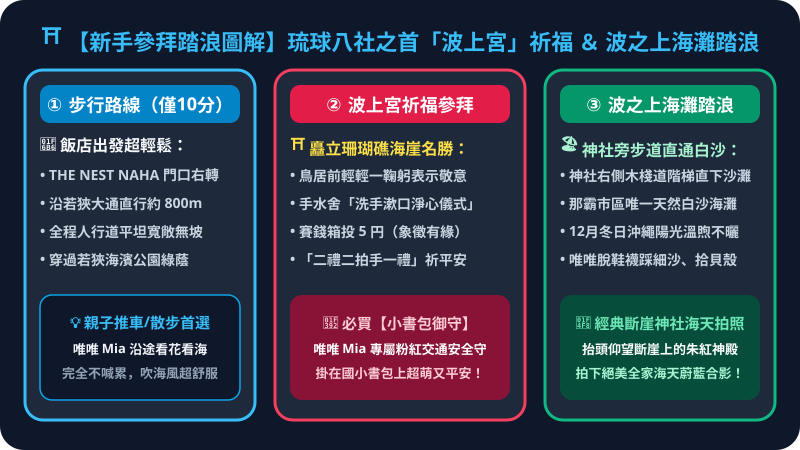
🗺️ 波上宮參拜 ＆ 踏浪圖解指南
放大看細節
參拜 ＆ 踏浪核心攻略：
- • 平坦林蔭散步：從 NEST NAHA 出發步行僅 10 分鐘（800m），經若狹公園直達，全程無陡坡。
- • 斷崖紅瓦神殿：登上珊瑚礁岩頂參拜，投入 5 円有緣祈福，為全家求平安。
- • 必買小書包御守：唯唯 Mia 最愛粉色迷你日式書包造型交通安全御守（掛書包超吸睛）。
- • 海灘踩沙踏浪：神社右側木棧道階梯直通波之上海灘，細白軟沙踩浪看海天一色！
【逐步實戰微動作操作說明書】：
1
【動作 1：平坦林蔭漫步與穿過巨大黑鳥居】：09:30 出飯店右轉，穿過安靜的西町街區與若狹公園，路面平坦無坡步行僅 10 分鐘（800m）。走到波上宮石階前，穿過第一座巨大黑鳥居，在鳥居前微微一鞠躬（向神明致敬禮節），並靠右側步行（中央為神明專用通道）。
2
【動作 2：手水舍（淨手水槽）標準四步洗手漱口】：走上石階，右側即為手水舍。① 右手持木勺舀一滿勺水，倒水清洗左手；② 換左手持勺，洗右手；③ 換右手持勺，倒水至左手掌心，引水漱口吐在水槽外（切忌直接用嘴去湊勺子！）；④ 將勺子垂直立起，用剩餘的水沖洗木勺柄，將勺子扣放原位。
3
【動作 3：拜殿投幣祈福【二禮二拍手一禮】】：步入紅瓦本殿前，站在賽錢箱前微微一鞠躬。投入 5 円日幣硬幣（5 円在日語諧音「御緣」，象徵與神結好緣）。端正站好：深深鞠躬兩次（二禮）➔ 在胸前拍手兩次（二拍手）➔ 雙手合十閉眼默唸全家健康平安 ➔ 最後深深一鞠躬（一禮）完成。
4
【動作 4：社務所挑選小書包御守 ＆ 階梯漫步至海灘踏浪】：轉至右側社務所，為唯唯 Mia 挑選粉紅色迷你日式雙肩小書包造型的交通安全御守（500 円，掛在小學生書包超吸睛）。接著沿神社右側木棧道階梯直通「波之上海灘」，冬日沖繩陽光溫和不曬，唯唯脫下鞋襪踩在細軟白沙上玩貝殼踩踩海水，拍下波上宮斷崖懸壁絕美海景！
⚠️【網路實戰避坑密技】：若唯唯踩浪弄濕雙腳，海灘入口處設有投幣式沖腳水龍頭（100 円）或可自備小毛巾擦拭；神社抽籤若抽到「凶」，請綁在神社境內的指定松樹繩架上化解，若抽到「吉」則摺好放在皮夾隨身保平安。
【現場溝通必備・中日手指字卡】
出示手機即可
情境
波上宮社務所購買小書包御守
「ランドセルのお守りを赤と黒1つずついただけますか？おみくじを引いてもよろしいですか？」
💡 中文含義：請問可以給我紅色和黑色的小書包御守各 1 個嗎？我們也想抽籤祈福，謝謝。
12:00 - 13:00 週六正常營業・核實準確
📍 第二關：順路排隊名店：龜かめそば（Kame Kame Soba）濃郁排骨麵
週六營業・週日公休
新鮮野生艾草免費大口加：
老店最大特色是桌上滿滿一盆洗淨的新鮮野生艾草（フーチバー）免費隨你取用！趁湯剛滾燙時抓一把泡進湯裡，清香解膩，群祐大讚比拉麵還順口！
【逐步實戰微動作操作說明書】：
1
【動作 1：步行 6 分鐘與推開暖簾進入】：11:45 從海灘穿過若狹街區步行 500 公尺（約 6 分鐘），抵達黃色招牌的沖繩麵百年名店「龜かめそば」。撥開門口白暖簾推門進入，迎面撲來超濃郁的豬骨與柴魚熬煮高湯香氣！
2
【動作 2：食券機（自動點餐機）投幣按鈕順序】：玄關右側即是復古食券機。① 先將千円大鈔平整推入紙鈔入口（按鈕指示燈全部亮起）；② 按下左上方招牌「軟骨ソーキそば（軟骨排骨麵）」大碗或中碗；③ 為唯唯按「三枚肉そば（三層肉麵）」；④ 機器掉出紙質食券與找零，取回食券與硬幣。
3
【動作 3：入座榻榻米卡座與遞交食券】：將食券拿給笑瞇瞇的沖繩阿嬤店員，阿嬤會引導至日式榻榻米座席或木桌卡座。脫鞋入座後，自行至角落飲水機倒冰涼香濃的沖繩麥茶（水杯在上方，壓倒水桿出水）。
4
【動作 4：享用軟骨化開美味 ＆ 免費加滿沖繩艾草（フーチバー）】：大碗排骨麵上桌！大塊軟骨排骨經慢火燉煮整整 8 小時，用筷子一夾瞬間化開，軟骨晶瑩剔透如同果凍般滑嫩入味；桌上大碗擺放免費新鮮沖繩艾草（フーチバー），抓一大把浸入熱湯中，清香撲鼻！愛吃辣的爸爸可滴上幾滴沖繩「泡盛辣椒（コーレーグース）」，湯頭瞬間昇華！
⚠️【網路實戰避坑密技】：泡盛辣椒是用島辣椒浸泡高濃度泡盛烈酒製成，後勁極強！請先滴 2~3 滴試味道，切勿一次倒太多；店家週六正常營業，早晨 11:45 前到店可避開正午 12:15 當地上班族人潮！
【現場溝通必備・中日手指字卡】
出示手機即可
情境
入座交排骨麵食券給店員阿嬤
「軟骨ソーキそばの食券です。テーブル席で4名一緒にお願いします。」
💡 中文含義：這是軟骨排骨麵的食券，麻煩安排我們全家 4 位坐方桌座位，謝謝。
13:15 - 14:30 恪守勝穩鐵律
📍 第三關：NEST NAHA 房間黃金午休充電 75 分鐘
充飽電不鬧彆扭
🛏️ 午休專屬獨立大床・靜音遮光充電實景
【逐步實戰微動作操作說明書】：
1
【動作 1：散步 8 分鐘回飯店進房脫鞋】：13:00 吃飽散步 600 公尺回 NEST NAHA。搭電梯回尊爵客房，玄關脫鞋、將防盜扣掛上，開啟靜音微風空調（建議 25°C）。
2
【動作 2：雙層全遮光窗簾拉緊密合】：走向大片景觀落地窗，將內層遮光窗簾與外層厚布窗簾緊密拉合，阻絕正午強光，房間瞬間轉為安靜微暗的放鬆舒眠環境。
3
【動作 3：全家 4 張獨立床位舒適深層熟睡】：唯唯在海灘踩沙跑跳、群祐也走累了，兩人躺在各自獨立的專屬單人床與沙發床上，蓋上輕柔羽絨被，不出 10 分鐘即陷入香甜深層熟睡。
4
【動作 4：爸媽抬腿放鬆與定鬧鐘 14:15】：爸爸設定手機鬧鐘（14:15），媽媽抬腿敷面膜靜養閉目養神，充分享受自由行才有的從容餘裕。醒來後孩子精神飽滿、毫無哭鬧起床氣！
⚠️【網路實戰避坑密技】：出發前確認玄關「請勿打擾（Do Not Disturb）」磁鐵貼在房門外，避免房務人員敲門打擾全家珍貴的午後充電時光。
【現場溝通必備・中日手指字卡】
出示手機即可
情境
向飯店櫃檯領取新浴巾或瓶裝水
「部屋のタオルを新しく交換していただけますか？お水も2本いただけますか？部屋番号は〇〇〇です。」
💡 中文含義：請問可以幫我們的房間換新毛巾嗎？能再多給 2 瓶礦泉水嗎？房號是〇〇〇，謝謝。
14:45 - 16:30 唯唯 Mia 最愛
📍 第四關：14F 頂樓溫水無邊際泳池戲水盛宴 ＆ Happy Hour
冬季溫水恆溫
暖意戲水與海景：
12 月恆溫加熱水質清澈溫暖，唯唯在池邊踢水拍水花，哥哥群祐大展身手。池畔有乾淨毛巾備品，回房沖熱水澡吹頭髮，神清氣爽！
【逐步實戰微動作操作說明書】：
1
【動作 1：換上泳裝浴袍搭電梯直上 14F】：14:45 全家換上泳裝、披上深藍色厚浴袍，攜帶客房大浴巾搭乘電梯直上 14F 頂樓天際泳池。
2
【動作 2：刷卡感應閘門與下水戲水】：感應房卡進入泳池區，冬季池水維持 30°C~32°C 溫熱狀態！唯唯套上手臂圈在淺水區浮水嬉戲，群祐在長條泳道踢水暢游，全家靠在無邊際玻璃牆，眺望晴空下的那霸市區街景。
3
【動作 3：17:00 Happy Hour 池畔領取暢飲點心】：傍晚 17:00 頂樓池畔酒吧 Happy Hour 準時啟動！大人領取現打生啤與調酒，孩子領取沖繩香檸果汁與小餅乾，全家在夕陽下舉杯乾杯！
4
【動作 4：浴巾裹緊更衣回房梳洗】：戲水完畢立即用大浴巾將孩子包覆擦乾，套上長浴袍搭梯回房沖洗熱水澡，換上保暖乾爽便服，準備出發夜逛國際通！
⚠️【網路實戰避坑密技】：頂樓海風較強，出水後切勿讓孩子在露天長椅停留過久吹風；回房後用吹風機快速將唯唯的頭髮完全吹乾再出門。
【現場溝通必備・中日手指字卡】
出示手機即可
情境
14F Sky Lounge 點 Happy Hour 免費飲品小點
「ハッピーアワーのオリオン生ビールを2杯、子供用のソフトドリンクを2杯お願いします。」
💡 中文含義：請給我們 2 杯 Happy Hour 的 Orion 生啤酒，以及 2 杯小朋友喝的無酒精飲料，謝謝。
17:00 - 21:00 核心必去
📍 第五關：國際通漫步 ＆ Calbee+ 現炸薯條 ＆ 驚安殿堂唐吉訶德免稅
夜市繁華購物
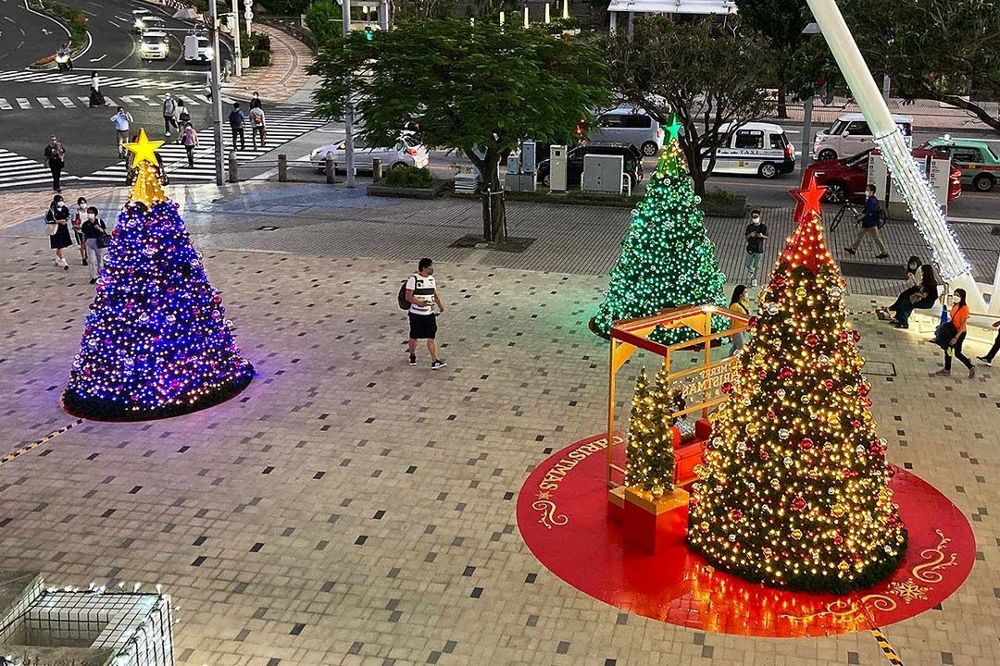
✨ 縣廳前久茂地巨型聖誕樹
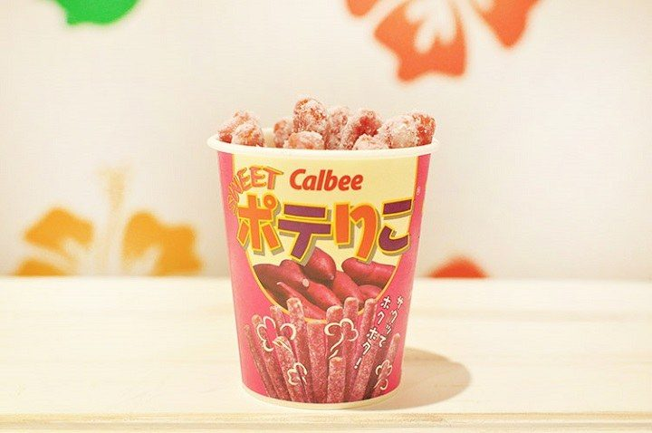
🍟 Calbee+ 現炸紅芋薯條
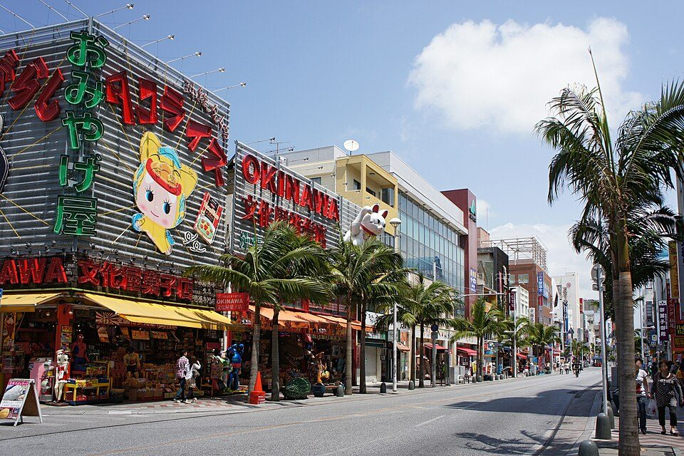
🏮 國際通繁華夜市街景
【逐步實戰微動作操作說明書】：
1
【動作 1：計程車 7 分鐘直送「縣廳前」走入久茂地聖誕彩燈節】：18:00 飯店門口搭計程車（約 800 円）至「縣廳前 Palette Kumoji」下車。廣場前點亮數萬顆璀璨 LED 打造的「巨型聖誕樹」與久茂地冬季彩燈光廊，全家先在聖誕樹下拍照，接著拐彎正式踏入熱鬧的國際通夜市大道！
2
【動作 2：進入 Calbee+ 點購現炸熱騰騰沖繩紅芋薯條】：沿著國際通步行 3 分鐘抵達 Calbee+ 專賣店。至櫃檯點購現點現炸的「Poteriko 沖繩紅芋薯條（ポテりこ 紫芋）」（340 円），剛出鍋外酥內鬆軟燙口，唯唯與群祐一人一杯捧在手上大口吃！
3
【動作 3：攻佔唐吉訶德國際通店 5 層樓大採購】：走進 24 小時營業的唐吉訶德免稅旗艦店，推購物籃搭電梯直上 4F 玩具文具區（寶可夢、三麗鷗文具），再下 2F 藥妝、1F 沖繩限定零食土產（雪鹽金楚糕、石垣牛仙貝、黑糖泡芙）。
4
【動作 4：專用免稅櫃檯（Tax-Free Counter）結帳退稅】：採買滿 5,500 円，前往 2F 專屬「免稅收銀台（Tax-Free Counter）」排隊。遞交全車商品與中華民國護照正本，店員刷條碼直接折抵 10% 消費稅，並由收銀機扣除手機折價券 5%！店員將免稅消耗品裝入專用透明封口密封袋封口。
⚠️【網路實戰避坑密技】：**免稅專用透明密封袋上的紅字封條，在「離開日本回台灣前絕對不可拆開」**！若在境內拆封視同已消費，海關抽查可能需補繳 10% 稅金；若有當晚就要吃的零食飲料，請在結帳時挑出走「一般收銀台」分開結帳！
【現場溝通必備・中日手指字卡】
出示手機即可
情境
Calbee+ 買現炸紅芋薯條 ＆ 唐吉訶德免稅結帳
「ポテりこ紫芋味を2つ揚げたてでお願いします。（ドンキ店員さん：免税手続きをお願いします。パスポートはこちらです。）」
💡 中文含義：我們要 2 份現炸紅芋口味 Poteriko 薯條！（唐吉訶德結帳：麻煩辦理免稅手續，這是我的護照。）
🍽️【國際通精華商圈・徒步 3~5 分鐘必吃美食口袋清單】
美食天花板
🥩 焼肉もとぶ牧場（那霸店）
必點：牧場直送頂級本部牛燒肉盛合、牛五花
久茂地 2 丁目 • 沖繩農場直送頂級黑毛和牛，油脂熔點極低
導航
🍙 豬肉蛋飯糰 牧志本店（ポークたまご）
必點：現煎厚切午餐肉 ＋ 嫩煎島雞蛋飯糰
牧志市場巷內 • 沖繩靈魂排隊早餐美食，熱騰騰米飯超香
導航
🏮 國際通橫丁（國際通りれのれん街）
必點：阿古豬生薑燒、山苦瓜炒島豆腐、生鮮海葡萄
國際通中央 • 傳統琉球居酒屋一條街，熱鬧祭典氛圍
導航
🥔 Calbee+ 現炸洋芋片 ＆ 紅芋薯條
必點：現炸熱騰騰黑糖厚切洋芋片、紅芋條（ポックル）
國際通松尾 • 剛起鍋油炸香脆無比，沾冰淇淋超銷魂
導航
🧂 鹽屋（塩屋 國際通松尾店）
必點：宮古島雪鹽霜淇淋（灑 10 種天然風味鹽）
國際通松尾 • 鹹甜綿密絕配，可自由撒辣椒鹽與抹茶鹽
導航
🍜 暖暮拉麵（那霸牧志店）
必點：芝麻香蔥濃豚骨拉麵 ＋ 烈火一口餃子
牧志 2 丁目 • 曾力壓一蘭奪得九州拉麵冠軍的名牌拉麵
導航
19:00 - 20:30 沖繩道地美食
📍 第六關：國際通沖繩道地晚餐：阿古豬家常料理 ＆ 炒苦瓜定食
道地琉球風味
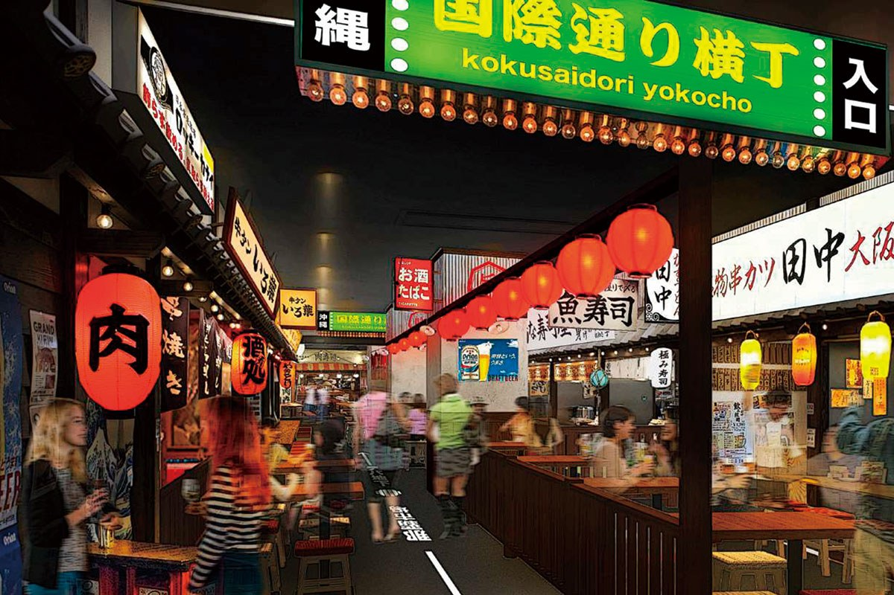
🏮 國際通橫丁美食街實景
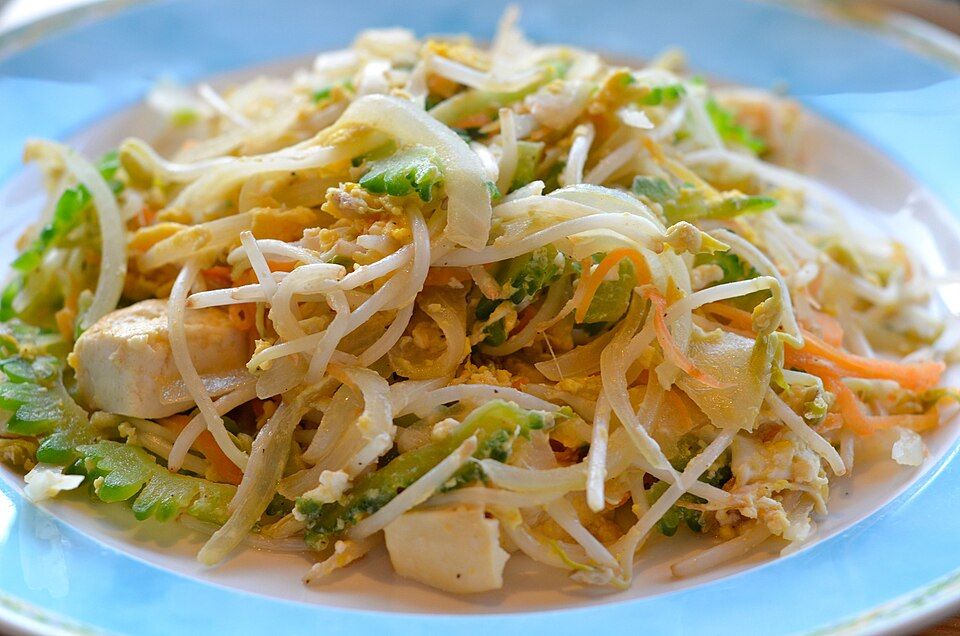
🍲 沖繩經典炒苦瓜豆腐定食實景
【逐步實戰微動作操作說明書】：
1
【動作 1：步入阿古豬家常料理名店】：20:00 逛完唐吉訶德，漫步至國際通巷內道地阿古豬琉球料理餐廳（如波照間、花笠食堂或島菜家常店）。門口店員親切招呼入座木質四人桌。
2
【動作 2：點選招牌阿古豬生薑燒肉與山苦瓜豆腐定食】：翻開圖文菜單，點「阿古豬生薑燒肉定食（アグー豚生姜焼き定食）」、「沖繩什錦炒苦瓜（ゴーヤーチャンプルー）」與唯唯最愛的「沖繩軟骨排骨麵套餐」；大人點一杯 Orion 生啤酒慶祝。
3
【動作 3：享用道地家常海葡萄與海帶絲前菜】：定食附贈沖繩三寶：水靈剔透在嘴裡嗶嗶啵啵爆開的「生鮮海葡萄」、香滑滑順的「沖繩水雲醋（もずく）」與香 Q 越光米飯，阿古豬油花鮮甜毫無腥味，苦瓜經島豆腐與厚蛋翻炒爽脆甘甜不苦澀！
4
【動作 4：結帳門口攔計程車 7 分鐘直送回飯店】：吃飽後至櫃檯現金或刷卡結帳，走出巷口在大馬路上隨手攔計程車，出示「ネストホテル那覇」字卡，7 分鐘平穩直送飯店大廳，全家洗去一身疲憊安穩入眠！
⚠️【網路實戰避坑密技】：國際通主街沿線計程車極多，招手即停；若帶有唐吉訶德大包免稅袋，上車時司機同樣會按按鈕開啟後車廂讓您放置，完全不需要抱在大腿上擠座位。
【現場溝通必備・中日手指字卡】
出示手機即可
情境
特色居酒屋點餐 ＆ 飯後搭計程車回飯店
「ゴーヤチャンプルー定食とアグー豚生姜焼き定食をお願いします。（帰りタクシー：ネストホテル那覇西までお願いします。）」
💡 中文含義：請給我們一份炒苦瓜定食與一份阿古豬生薑燒定食。（回程計程車司機：請載我們到 THE NEST NAHA。）
20:30 深夜免稅 ➔ 23:00 4箱打包秤重安歇
📍 第七關：國際通唐吉訶德旗艦店深夜免稅掃貨 ➔ 計程車 7 分直送回宿 ➔ 4 大行李箱秤重配置與安心入眠
深夜掃貨 ＆ 終極打包
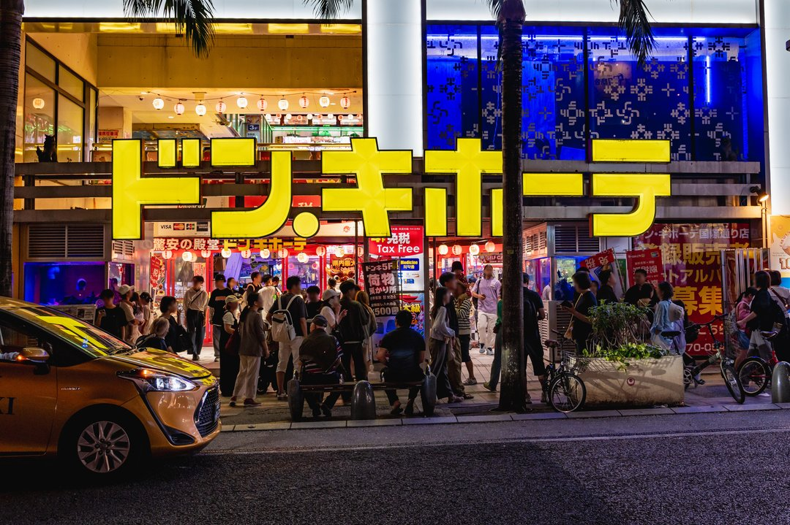
🐧 唐吉訶德 24H 旗艦店實景
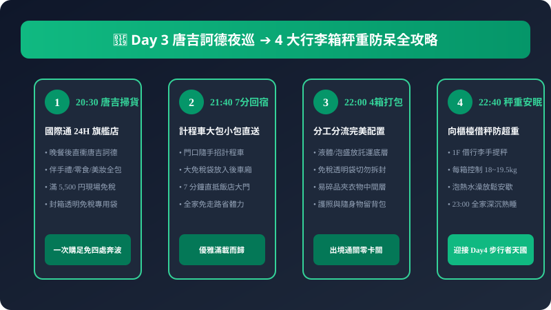
🗺️ 行李打包防超重圖解
【逐步實戰微動作操作說明書】：
1
【動作 1：國際通晚餐後直奔唐吉訶德 24H 旗艦店大掃貨】：20:30 吃完阿古豬與炒苦瓜，步行 2 分鐘直入唐吉訶德國際通店。B1 到 4F 一應俱全：1F 採買黑糖棒、雪鹽餅乾與紅芋塔大禮盒；2F 補齊 EVE 止痛藥、合利他命與防蚊貼；3F 讓群祐挑選日本正版寶可夢卡牌、唯唯挑選三麗鷗盲盒！
2
【動作 2：專屬免稅收銀台一次結帳退稅打包】：購物籃滿載後搭手扶梯至專屬免稅櫃檯。出示勝穩與全家護照，服務人員依日本海關法規將免稅品封入專用透明密封袋中，現折 10% 消費稅，並裝入大提袋方便搬運。
3
【動作 3：21:40 門口攔計程車 7 分鐘直抵飯店大門】：走出唐吉訶德大門，隨手攔一輛排班計程車。司機按鈕開啟後車廂協助放入所有大免稅袋，全家入座吹冷氣，車程僅 7 分鐘（車資約 900 円）直達 NEST NAHA 正門，體力零消耗！
4
【動作 4：4 件行李箱防呆分配 ＋ 1F 借行李秤實測防超重】：回房攤開 4 件行李箱：液體類（如泡盛、果醬、化妝水）**100% 置入託運行李箱底層**；免稅密封袋整齊排列；易碎品用乾淨毛巾夾在中間。至 1F 櫃檯向人員出示字卡借用手提行李秤，實測每箱維持在 18~19.5kg 安全範圍。全家放鬆泡澡洗漱，23:00 安穩入眠，從容迎接明天退房與週日步行者天國！
⚠️【網路實戰避坑密技】：日本免稅商品（透明密封袋）在離境日本海關前**嚴禁拆封**，若拆封會被海關補徵 10% 消費稅；所有液體、噴霧、果凍類物品**嚴禁放入隨身登機背包**，務必全部裝入託運大行李箱！
【現場溝通必備・中日手指字卡】
出示手機即可
情境
在飯店 1F 前台借用手提行李秤測量行李重量
「すみません、荷物の重さを測りたいのですが、ラゲッジスケール（荷物用はかり）をお借りできますか？」
💡 中文含義：不好意思，我想量一下行李箱的重量，請問可以借我行李手提秤嗎？謝謝。
2026/12/20 (週日) 第四天
【第四天】國際通採買逛到爽！【燒肉本部牧場】頂級和牛盛宴 ＆ 週日步行者天國封街大採購
行程主軸：退房寄存行李 ➔ 國際通採買逛到爽！晨間悠閒伴手禮巡禮 ➔【燒肉本部牧場】頂級和牛午間盛宴（線上預約100%免排隊）➔ 12:00 無縫銜接「週日步行者天國」封街大道大血拚 ➔ 滿載搭單軌直達那霸機場凱旋歸國！
🎬 國際通採買 ＆ 本部牛燒肉實拍導覽影片（點擊直接搜尋 YouTube 開箱）
08:30 起床 ➔ 09:30 退房放行李
📍 第一關：辦理退房（Check-out）＆ 行李全數免費寄存在 NEST NAHA
零行李出門
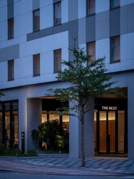
🏨 NEST NAHA 櫃檯與寄存區
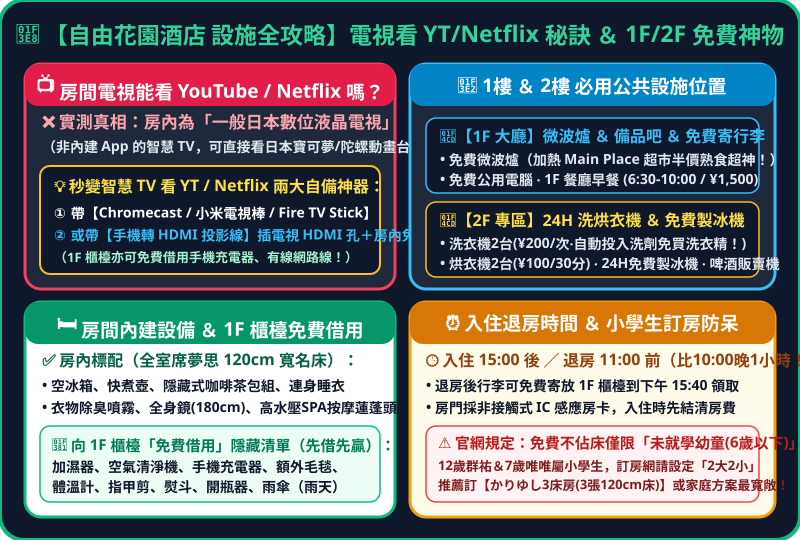
🧳 行李打包與寄存防呆圖解
【逐步實戰微動作操作說明書】：
1
【動作 1：09:15 房內最後防呆檢查與拔房卡】：全家行李打包封箱，檢查房內插座充電頭、浴室毛巾架、衣櫃衣架與保險箱確認無遺漏物品；拔起玄關取電房卡，推行李搭電梯下至 1F 大廳。
2
【動作 2：1F 櫃檯交回房卡退房】：走向櫃檯將 2 張感應房卡交給櫃檯人員並說「Check-out Please」。櫃檯快速在系統確認無額外消費，微笑鞠躬完成退房。
3
【動作 3：辦理免費行李寄存領取號碼手環】：出示手機字卡「荷物を預かっていただけますか？（請問能幫忙寄放行李到下午嗎？）」，櫃檯人員會遞給您塑膠號碼手環，並將 4 件大行李箱扣上相同編號號碼牌推進後方保管室。
4
【動作 4：隨身輕裝出發國際通】：確認護照、錢包、手機與行動電源放入隨身小斜背包，全家兩手空空、一身輕鬆走出大門叫計程車！
⚠️【網路實戰避坑密技】：行李保管手環牌請由爸爸統一放皮夾收好，回程取行李時憑此號碼牌對號提領；寄存完全免費，最晚可寄放到當晚 24:00！
【現場溝通必備・中日手指字卡】
出示手機即可
情境
櫃檯辦理退房與寄放行李到下午
「チェックアウトをお願いします。荷物を今日の午後4時半まで預かっていただけますか？」
💡 中文含義：我們想辦理退房。請問能將行李寄存在這裡到今天下午 4:30 嗎？
09:45 叫車 ➔ 10:00 - 11:20 晨間採買
📍 第二關：國際通晨間伴手禮免排隊巡禮（御菓子御殿・福木屋年輪蛋糕・塩屋雪鹽霜淇淋）
計程車 7 分鐘直送起點
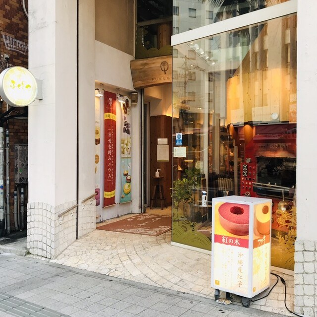
🎂 福木屋現烤年輪蛋糕
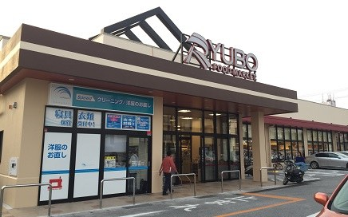
🏢 縣廳前 Palette Kumoji
【逐步實戰微動作操作說明書】：
1
【動作 1：計程車 7 分鐘直送「縣廳前 Palette Kumoji」】：09:45 飯店大門搭計程車直達國際通起點縣廳前，車資約 800 円。下車即是國際通入口，早晨遊客稀少，空氣清新舒暢。
2
【動作 2：福木屋（ふくぎや）採買現烤極品年輪蛋糕】：走入以沖繩傳統福木命名的年輪蛋糕名店【ふくぎや】。透過玻璃窗觀看師傅現場層層烘烤年輪蛋糕，空氣飄散濃郁蛋香與蜂蜜香氣！挑選招牌「紅芋年輪蛋糕（紅の木）」與「黑糖蜂蜜年輪蛋糕（フクギ）」，常溫可保存 14 天，紙盒包裝華麗大氣，伴手禮首選！
3
【動作 3：御菓子御殿挑選元祖紅芋塔】：步行 1 分鐘至首里城紅瓦造型的【御菓子御殿】。拿取雙層手提籃，狂掃獲獎的「元祖紅芋塔禮盒」、黑糖酥與石垣牛仙貝，店內滿 5,500 円直接在專用免稅櫃檯扣稅 10%！
4
【動作 4：塩屋（雪鹽專賣店）品嚐宮古島雪鹽霜淇淋】：孩子們走進【塩屋】，買兩支濃郁香醇的宮古島雪鹽霜淇淋。店內免費提供 8 種特色風味調味鹽（柚子鹽、抹茶鹽、可可鹽、辣椒鹽），唯唯與群祐在甜霜淇淋上撒上少許柚子鹽，鹹甜交融、口感層次極致驚艷！
⚠️【網路實戰避坑密技】：上午 10:00~11:20 國際通遊客極少，不用排隊、拍照完全沒有路人遮擋；買好的年輪蛋糕與紅芋塔可先裝入大紙袋由爸爸提著，準備 11:30 步行 1 分鐘進燒肉店！
【現場溝通必備・中日手指字卡】
出示手機即可
情境
搭計程車直達國際通起點縣廳前
「運転手さん、県庁前のパレットくもじ（国際通りの入口）までお願いします。」
💡 中文含義：司機先生，請載我們到縣廳前的 Palette Kumoji（國際通入口），謝謝。
🍽️【國際通精華商圈・徒步 3~5 分鐘必吃美食口袋清單】
美食天花板
🥩 焼肉もとぶ牧場（那霸店）
必點：牧場直送頂級本部牛燒肉盛合、牛五花
久茂地 2 丁目 • 沖繩農場直送頂級黑毛和牛，油脂熔點極低
導航
🍙 豬肉蛋飯糰 牧志本店（ポークたまご）
必點：現煎厚切午餐肉 ＋ 嫩煎島雞蛋飯糰
牧志市場巷內 • 沖繩靈魂排隊早餐美食，熱騰騰米飯超香
導航
🏮 國際通橫丁（國際通りれのれん街）
必點：阿古豬生薑燒、山苦瓜炒島豆腐、生鮮海葡萄
國際通中央 • 傳統琉球居酒屋一條街，熱鬧祭典氛圍
導航
🥔 Calbee+ 現炸洋芋片 ＆ 紅芋薯條
必點：現炸熱騰騰黑糖厚切洋芋片、紅芋條（ポックル）
國際通松尾 • 剛起鍋油炸香脆無比，沾冰淇淋超銷魂
導航
🧂 鹽屋（塩屋 國際通松尾店）
必點：宮古島雪鹽霜淇淋（灑 10 種天然風味鹽）
國際通松尾 • 鹹甜綿密絕配，可自由撒辣椒鹽與抹茶鹽
導航
🍜 暖暮拉麵（那霸牧志店）
必點：芝麻香蔥濃豚骨拉麵 ＋ 烈火一口餃子
牧志 2 丁目 • 曾力壓一蘭奪得九州拉麵冠軍的名牌拉麵
導航
11:30 - 12:45 免排隊頂級燒肉盛宴
📍 第三關：【燒肉本部牧場 那霸店】（焼肉もとぶ牧場）獲獎本部和牛午間盛宴（線上預約・100% 免排隊！）
縣廳前站旁 1 分鐘
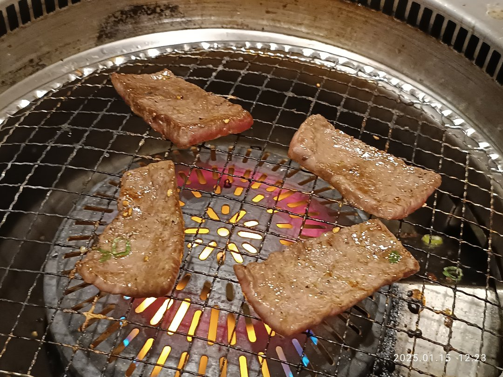
🚪 燒肉本部牧場大門（MK大樓3F）
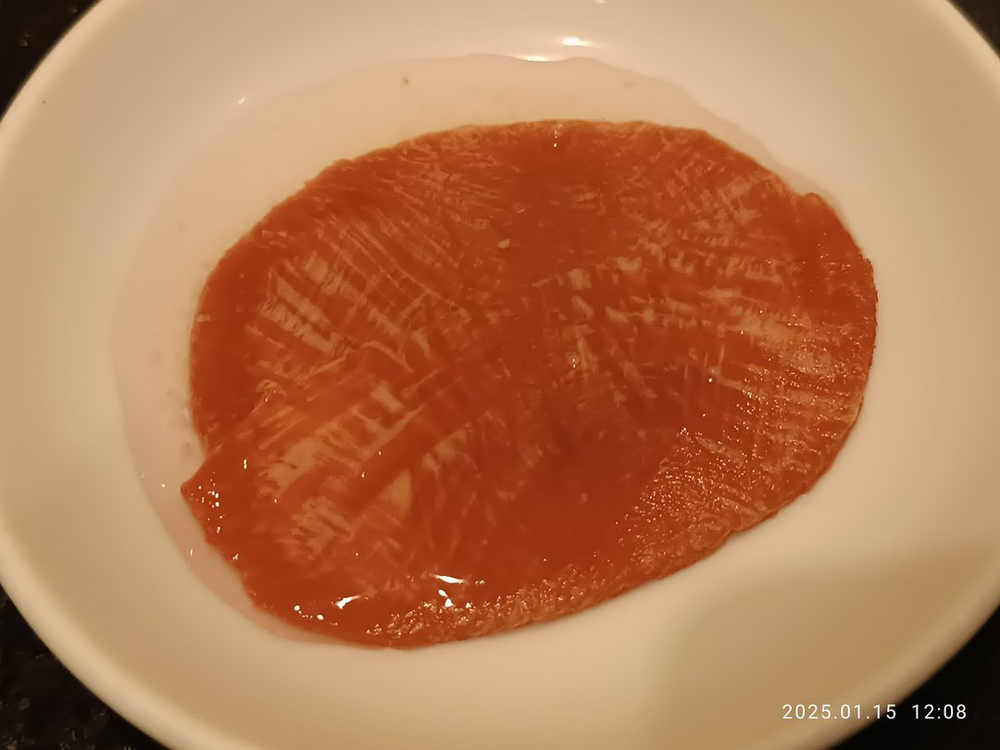
🥩 獲獎本部和牛午間燒肉套餐
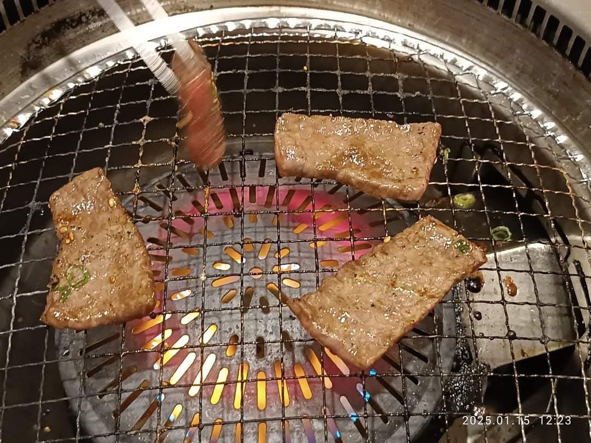
🔥 頂級本部牛特選霜降盛合
【逐步實戰微動作操作說明書】：
1
【動作 1：步入久茂地 MK 大樓搭電梯上 3F】：11:30 準時抵達縣廳前站旁的久茂地 MK 大樓，搭電梯上 3F 燒肉本部牧場。門口掛著沖繩「もとぶ牛（本部牛）」牧場直營獲獎黑金木匾！
2
【動作 2：櫃檯報出預約大名直奔獨立家庭包廂】：**向店員出示手機預約信並說「Yoyaku no LIN desu（預約的林先生）」**。店員核對預約名單後，立刻鞠躬熱情引導全家進入獨立包廂木門卡座，完全零等待、免排隊！
3
【動作 3：平板點選超值和牛午間燒肉定食】：桌上備有中英日多語觸控平板。點兩份「本部牛特選燒肉午間套餐（特選焼肉ランチ）」（每份約 2,500~3,500 円，含特選牛五花、牛里肌、越光米飯、海帶芽湯、沙拉與小菜）；另為孩子單點一份薄切牛五花與炙燒玉子燒。
4
【動作 4：無煙烤爐炙烤 8 秒爆汁入口化開】：啟動無煙烤爐開關，將大理石紋霜降和牛夾上鐵網，**一面只需烤 5~8 秒翻面再烤 3 秒**！油脂融化滴入炭火發出滋滋悅耳聲響，沾少許特製淡醬油或喜馬拉雅玫瑰鹽放入口中，肉汁在舌尖瞬間化開，白飯一口接一口停不下來！
⚠️【網路實戰避坑密技】：午間定食的越光米白飯與熱湯可「免費續加（おかわり無料）」，群祐食量大可按服務鈴請店員續碗；烤爐強力下吸式抽風系統極度先進，吃完全身衣服完全沒有一絲烤肉油煙味！
【現場溝通必備・中日手指字卡】
出示手機即可
情境
出示預約入座 ＆ 點本部牛燒肉套餐與兒童餐具
「予約している林（リン）です。11時半の予約です。（もとぶ牛の焼肉ランチセットをお願いします。子供用の食器をいただけますか？）」
💡 中文含義：我是預約的林先生，預約時間是 11:30。（點餐：我們要本部牛燒肉午間套餐，並請提供兒童餐具，謝謝。）
12:45 - 16:30 封街大採購狂歡
📍 第四關：國際通「週日步行者天國」（全街封路漫遊無車干擾）最後大採購狂歡
週日 12:00~18:00 專屬
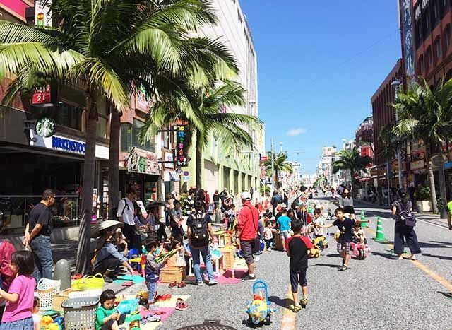
🚶 週日步行者天國封街大道
【逐步實戰微動作操作說明書】：
1
【動作 1：12:45 吃飽步出大樓，無縫踏上無車封街大道】：吃完燒肉結帳搭梯下樓，正好迎來中午 12:00 準時啟動的**「國際通週日步行者天國（Transit Mall）」**！整整 1.6 公里的大馬路兩端拉起安全路障，全面禁止汽車與公車通行，全家牽著手走在大馬路正中央散步，拍照完全不用顧慮車流！
2
【動作 2：攻佔唐吉訶德國際通店 5 層樓免稅採買】：直奔國際通中央的唐吉訶德免稅旗艦店。1 樓狂掃泡盛辣椒、沖繩石垣島辣油、黑糖仙貝；2 樓藥妝區購買合利他命、EVE止痛藥、ROIHI-TSUBOKO 穴位貼布；3 樓選購兒童日系保溫瓶與文具，全家人購物籃裝得滿滿當當！
3
【動作 3：專用免稅櫃檯結帳 ＆ 出示 5% 優惠券】：至 2F 免稅專用櫃檯，出示全家護照正本，店員刷條碼自動扣除 10% 消費稅，並由手機條碼折抵 5% 優惠券，免稅品裝入專用封口塑膠袋密封。
4
【動作 4：Calbee+ 現炸紅芋薯條能量補充】：走出唐吉訶德，孩子們在 Calbee+ 再買一杯現炸熱騰騰紅芋薯條邊走邊吃，悠閒漫步看街頭藝人表演，為最後一天的購物行程畫下完美句點！
⚠️【網路實戰避坑密技】：週日步行者天國封街時段（12:00~18:00）國際通主街「禁止任何車輛進入」，但主街所有垂直交叉的「小巷口」隨時有排班計程車；採買完畢只需步行 30 公尺進小巷即可輕鬆搭上計程車！
【現場溝通必備・中日手指字卡】
出示手機即可
情境
唐吉訶德結帳出示護照辦理免稅與優惠券
「免税（Tax-Free）会計をお願いします。パスポートを持っています。クーポンも使えますか？」
💡 中文含義：請幫我們辦理免稅結帳，我們有帶護照。請問也可以使用優惠折價券嗎？
16:30 - 17:15 取行李 ➔ 單軌直送機場
📍 第五關：回 NEST NAHA 取行李 ➔ 漫步 10 分鐘至「旭橋站」搭單軌直達那霸機場（大行李返台防呆攻略）
漫步 10 分鐘 ＋ 單軌 11 分鐘直達
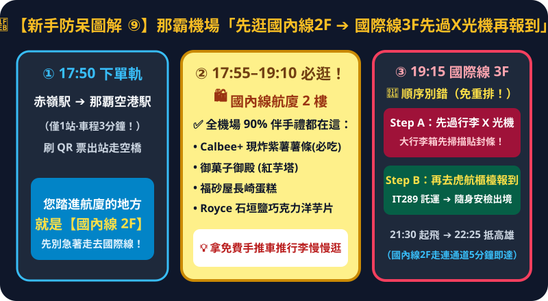
🗺️ 機場 3F 報到返台動線圖解
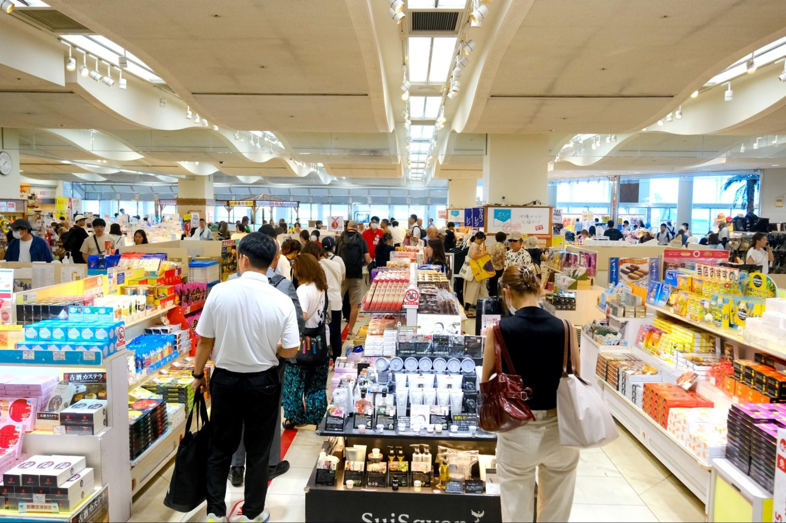
🚶 機場 2F 室內連通道實景
【逐步實戰微動作操作說明書】：
1
【動作 1：16:30 返回 NEST NAHA 取行李並整裝封箱】：在國際通小巷口搭計程車 7 分鐘（約 800 円）回到飯店大廳。出示號碼牌手環領回 4 件大行李箱，在沙發區將今日採買的伴手禮與免稅袋裝妥封箱，拉上拉鍊。
2
【動作 2：推行李沿西町平坦步道漫步 10 分鐘至「旭橋站」】：全家一人推一咖行李箱，沿著來時寬敞平坦的西町人行道往旭橋站方向漫步約 850 公尺（約 10~11 分鐘）。路面平坦無坑洞，唯唯也能輕鬆推著自己的小行李箱。
3
【動作 3：搭旭橋站電梯上 2F 買票，搭單軌直達終點「那霸機場站」】：進站搭電梯上 2F 閘門，購買至「那霸機場站」的單軌車票（或刷 Suica/ICOCA）。搭電梯至 1 號月台（往那霸機場方向），列車行駛 11 分鐘準時抵達終點站「那霸機場站」，完全避開週日傍晚市區與公路的塞車大塞塞！
4
【動作 4：經 2F 室內連通空橋直通 3F 國際線出發大廳】：出站後刷卡出閘門，推著行李車直接走過 2F 室內空橋進入機場航廈，搭乘中央大型景觀透明電梯直上 3F 國際線出發大廳，直抵台灣虎航 IT289 報到櫃檯！
⚠️【網路實戰避坑密技】：週日傍晚（16:30~18:00）那霸市區往機場的國道 58 號與快速道路經常發生下班與觀光客車流擁堵，搭乘單軌電車擁有「專屬高架軌道、100% 準時不塞車」的絕對保證，起飛前 2 小時 25 分從容抵達航廈報到！
【現場溝通必備・中日手指字卡】
出示手機即可
情境
旭橋站購買往那霸機場車票與詢問電梯
「那覇空港までの大人2枚、子供2枚の切符を買いたいです。改札口のエレベーターはどちらですか？」
💡 中文含義：我們想買往那霸機場的單軌車票，2 張大人和 2 張小孩。請問無障礙電梯在哪個方向？
17:15 報到 ➔ 19:40 起飛 ➔ 20:30 高雄
📍 第六關：虎航 IT289 報到托運 ➔ 免稅店最後巡禮 ➔ 起飛凱旋抵達小港
準時登機返台
【逐步實戰微動作操作說明書】：
1
【動作 1：17:15 台灣虎航櫃檯排隊報到秤重托運】：起飛前 2.5 小時抵達虎航報到櫃檯（3F 國際線出發大廳）。全家出示 4 本護照正本，將 4 件大行李箱放上行李秤重傳送帶托運，領取登機證，地勤人員會確認隨身行李尺寸並貼上手提行李標籤條。
2
【動作 2：安檢檢查隨身水瓶倒空與筆電取出】：走向出發安檢口，隨身保溫瓶內若有茶水需在安檢前倒空；隨身背包內的筆電、平板與行動電源取出放塑膠托盤，全身通過金屬探測門，感應護照與臉部辨識出境。
3
【動作 3：候機室免稅店最後衝刺】：進入管制區候機大廳，在免稅店採買最後的名產：Royce 生巧克力（可加購保冷袋）、白色戀人餅乾與沖繩泡盛名酒；在飲水機裝滿常溫溫水至保溫瓶。
4
【動作 4：19:00 登機門候機 ➔ 19:40 準時起飛】：帶孩子前往指定登機門長椅休息，19:00 地勤廣播開始登機，全家出示登機證與護照登機。飛機於 19:40 準時起飛，台灣時間 20:30 平安抵達高雄小港機場，領取行李順利返家！
⚠️【網路實戰避坑密技】：日本管制區免稅店購買的生巧克力與液體酒類，店員會用透明免稅袋密封，在飛行途中切勿拆封；登機門附近冷氣較強，登機前先幫唯唯披上薄防風外套。
【現場溝通必備・中日手指字卡】
出示手機即可
情境
機場虎航櫃檯辦理登機與行李托運
「高雄行きのタイガーエアIT289便のチェックインをお願いします。家族4人分のパスポートです。受託手荷物は○個です。」
💡 中文含義：請幫我們辦理飛往高雄的台灣虎航 IT289 班機登機手續，這是全家 4 人的護照，托運行李有○件。
第一次去沖繩・全能實用工具庫
【實用工具】中日手指溝通卡、即時匯率退稅計算機、防呆清單
提供最安心的旅行後盾，包含一鍵複製日文手指卡、即時匯率退稅換算、行前檢查打勾清單與緊急聯絡電話。
2026 沖繩冬季限定・節慶盛典特輯
🎄【冬季限定特別活動＆夜間彩燈推薦】
四大亮點按車程分級
旅行期間：12/17(四) ~ 12/20(日)
12月中旬適逢沖繩年度「冬季夜間彩燈盛典」與「野生座頭鯨賞鯨海開首日」！以下為全家精心篩選距離下榻飯店（THE NEST NAHA）由近至遠的四大特別活動，附上活動實景照片、年齡亮點、車程車資預估、Google 地圖導航與現場溝通字卡，供隨時彈性參考選擇：
近距首選・車程 4 分鐘
12/19(六) 正式海開首航！
🐋 那霸三重城港・2026 野生座頭鯨賞鯨季首航
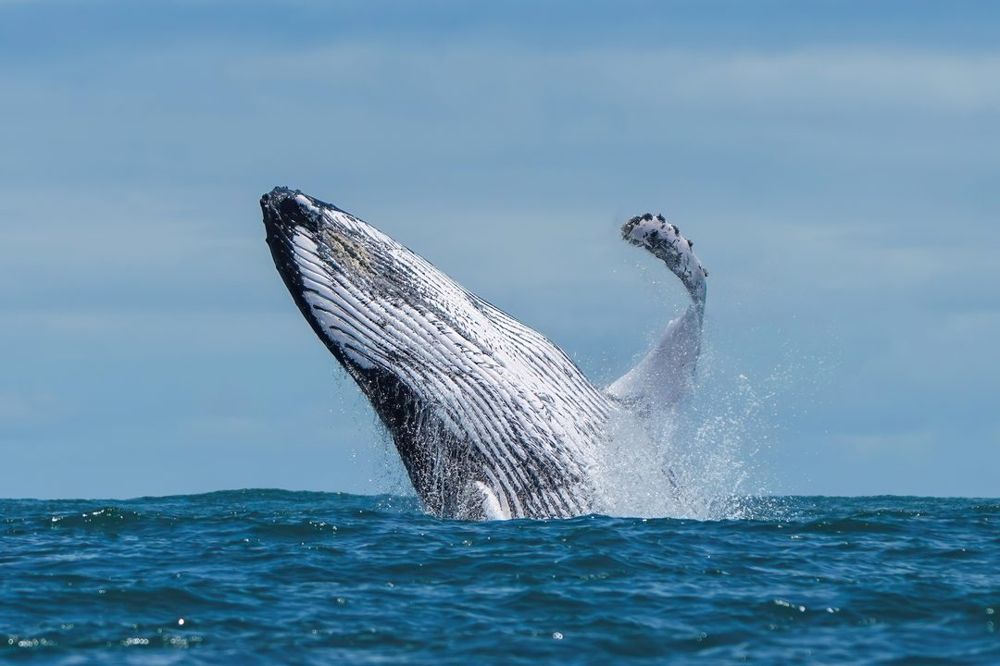
📸 慶良間海域野生座頭鯨破浪躍出海面實景
- • 地點距離：那霸三重城港（那霸市西 3-20），距離 NEST NAHA 僅 1.3 公里（計程車約 4 分鐘，車資約 600~700 円）。
- • 活動亮點：每年冬季野生座頭鯨南下交配育幼，12/19 正好為全沖繩首航日！若不上船，下午去港邊長堤吹風、看探鯨船隊集結出港亦是非常壯闊的海景體驗。
- • 孩子亮點：群祐（12歲）能近距離觀測巨型鯨魚噴水甩尾；唯唯（7歲）穿兒童救生衣搭平穩大船探險。
開啟 三重城港 Google 地圖導航
🚖 計程車手指字卡：
「運転手さん、那覇三重城港（那覇市西3-20）までお願いします。ホエールウォッチングの集合場所へ行きます。」
💡 中文：請載我們到那霸三重城港（西3-20），我們要去賞鯨船的集合報到處。
南部亮點・車程 20 分鐘
每日 18:00 ~ 22:00
✨ 糸滿海灘和平彩燈節 2026（いとまんピースフル）
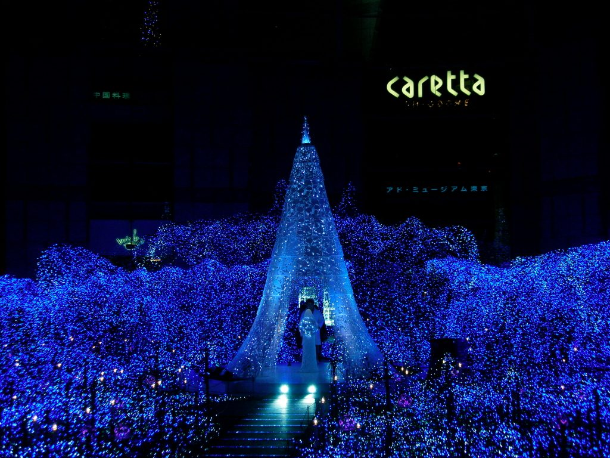
📸 糸滿美々海灘大型光雕城堡與燈海實景
- • 地點距離：美々ビーチいとまん（糸滿市西崎町 1-6-15），搭計程車走南向快速道路約 20~25 分鐘（車資約 3,200~3,600 円）。
- • 活動亮點：本島南部規模最大的冬季海濱燈節！2026 主題為「光之王國 ～琉球～」，結合光雕投影與海灘步道。
- • 孩子亮點：現場舉辦專為小朋友設計的「實境尋寶解謎遊戲」，群祐與唯唯拿著謎題地圖在燈海中闖關！
開啟 美々海灘彩燈節 Google 地圖導航
🚖 計程車手指字卡：
「運転手さん、美々ビーチいとまんのイルミネーション会場までお願いします。」
💡 中文：請載我們到美々海灘（Bibi Beach）的彩燈節活動會場，謝謝。
中部經典・車程 35 分鐘
每日 17:00 ~ 24:00 免費
🎅 北谷美浜美國村・Christmas Village 聖誕嘉年華
- • 地點距離：北谷町美浜，搭計程車走國道 58 號北上約 35~40 分鐘（車資約 4,500~5,000 円）。
- • 活動亮點：街區全體化身歐美復古聖誕小鎮！街道懸掛數萬顆燈飾、巨型聖誕老人爬牆裝置、雪橇麋鹿與薑餅屋。
- • 孩子亮點：唯唯 Mia 超愛拍照打卡童話造景；群祐喜歡逛美式玩具古著與海濱步道吃漢堡。
開啟 美國村 Google 地圖導航
🚖 計程車手指字卡：
「運転手さん、北谷のアメリカンビレッジまでお願いします。デポアイランドの近くで降ろしてください。」
💡 中文：請載我們到北谷美國村，請在 Depot Island 附近讓我們下車即可，謝謝。
全國頂級・車程 45 分鐘
日本全國燈節 Top 2
🌟 東南植物樂園・沖繩南國燈飾（400萬顆光之鯨鯊）
📸 400 萬顆光球打造巨型花卉與光之鯨鯊燈海實景
- • 地點距離：沖縄市知花 2146，搭計程車經沖繩自動車道約 45 分鐘（車資約 6,500~7,500 円；門票大人 2,100 円/兒童 1,000 円）。
- • 活動亮點：連續多年榮獲全日本「燈節大賞」全國第二名！廣達數萬坪的植物園被 400 萬顆彩燈點亮，設有音樂雷射連動秀。
- • 孩子亮點：草坪上超震撼的「光之巨型座頭鯨」與水上發光蓮花池，是沖繩最具代表性的冬季光影震撼大作。
開啟 東南植物樂園 Google 地圖導航
🚖 計程車手指字卡：
「運転手さん、沖縄市の東南植物楽園のイルミネーション会場までお願いします。高速道路を使ってください。」
💡 中文：請載我們到沖繩市東南植物樂園彩燈會場，請走高速公路（自動車道），謝謝。
中日手指溝通卡（點擊按鈕直接一鍵複製日文）
手機出示給司機/店員看
🚖 計程車：前往飯店
請載我們到 THE NEST NAHA（那霸市西1-6-1）：
ネストホテル那覇西（沖縄県那覇市西1-6-1）までお願いします。荷物が4個あります。
🚖 計程車：前往泊港魚市場
請載我們到 泊港魚市場（泊いゆまち）：
泊いゆまち（沖縄県那覇市港町1-1-18）までお願いします。
🚖 計程車：前往 PARCO CITY
請載我們到 浦添 PARCO CITY：
サンエー浦添西海岸 PARCO CITY までお願いします。
🚖 計程車：前往那霸機場
請載我們到那霸機場國際線 3F 出境大廳：
那覇空港 国際線ターミナル 3F出発ロビーまでお願いします。
🏨 飯店櫃檯：寄放行李
我們已退房，請協助寄放 4 件行李至傍晚 18:00：
チェックアウトしましたが、荷物を夕方18:00まで預かっていただけますか？
🍽️ 餐廳用餐：索取餐具
不好意思，請給我們 4 人的餐具與溫水：
すみません、4人分の取り皿とお水をお願いします。
即時日幣換算 ＆ 10% / 8% 退稅試算器
參考匯率（約 0.215）：
約 NT$ 1,183
服飾雜貨 10% 免稅後：
¥5,000 (約 NT$ 1,075)
零食伴手禮 8% 輕減稅率後：
¥5,093 (約 NT$ 1,095)
日本緊急聯絡與辦事處電話
日本警察局報案專線
110
日本火警 / 救護車急救專線
119
4 人全家核心開銷預算表
NEST NAHA 住宿（3 晚 4 床）
33,572 円（已預付）
全行程計程車交通費預估（4天全包）
約 13,000～14,000 円
全家海鮮牛排餐飲美食
約 40,000 円
戰鬥陀螺 X ＆ 免稅購物預算
約 50,000 円起